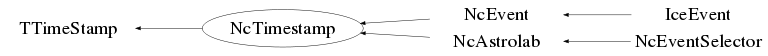

class NcTimestamp: public TTimeStamp
Class NcTimestamp Handling of timestamps for (astro)particle physics reserach. This facility supports picosecond timing precision. This class is derived from TTimeStamp and provides additional facilities (e.g. Julian date) which are commonly used in the field of (astro)particle physics. The basis of the used timing is the "day". 1 day=24 hours 1 hour=60 minutes 1 minute=60 seconds. So, 1 day consists of 86400 seconds. The absolute duration of a day is defined by the time scale that is used. The two main time scales for time recording are Universal Time (UT) and International Atomic Time (TAI), as outlined below. The UT time scale is always provided and the TAI (and its derived) time scale(s) may be activated by the various Set() functions, as outlined in the corresponding docs. For precise time keeping it is important to work within 1 single time scale and indicate which time scale is being used. Time information for the various time scales may be obtained via the Date() and the various Get() memberfunctions. Notes : 1) Both the UT and TAI based time scales provide picosecond precision, so from that respect there is no preference for one or the other. However, when timing is received from an external clock (e.g. GPS), it might be convenient to choose a specific time scale when setting dates and times depending on the format in which the clock information is broadcast. 2) As explained below, the UT and TAI clocks do not "tick" at the same pace. This implies that when two timestamps are compared (e.g. via the GetDifference() member function) both timestamps should be using the same time scale. 3) For most of the time broadcasting the Coordinated Universal Time (UTC) is used. This UTC time runs at the pace of TAI, but is kept close (within 0.9 sec) to UT by the introduction of Leap Seconds when abs(UT-UTC) exceeds 0.9 sec. This time synchronisation is coordinated by the International Earth Rotation and Reference Systems Service (IERS) via a daily monitoring of the Earth Orientation Parameters (EOP). Depending on dUT=UT-UTC, these Leap Seconds can be positive or negative. The introduction of Leap Seconds into UTC started at 01-jan-1972 00:00:00 UT. An overview of the history of introduced Leap seconds (TAI-UTC) is online available at : https://hpiers.obspm.fr/iers/bul/bulc/Leap_Second.dat or http://maia.usno.navy.mil/ser7/tai-utc.dat The time difference dUT=UT-UTC is monitored on a daily basis and the data are available at : https://hpiers.obspm.fr/iers/series/opa/eopc04 or http://maia.usno.navy.mil/ser7/ser7.dat The accuracy of dUT=UT-UTC is about 10 microseconds, so in case of accurate astronomical timing the user is advised to specify dUT in the various Set() facilities or use SetUT(). An automatic setting of dUT is provided based on the IERS data files. Please refer to the member function LoadUTCparameterFiles() for further details. 4) In some cases Unix Time (also called POSIX Time or UNIX Epoch Time) is used. Unix Time is closely releated to UTC and represents the (fractional) elapsed second count since the start of the Unix Epoch, in which every Unix Time day contains exactly 86400 seconds. This implies that for Unix Time the UTC leap seconds should be ignored, as explained below. The UNIX Time EPOCH starts at 01-jan-1970 00:00:00 UTC which corresponds to JD=2440587.5 (i.e. the start of MJD=40587, as explained in the discussion on Julian Date below). Synchronization with UTC is obtained by continuing the second count when a UTC leap second occurs and then the Unix Time count jumps up or down 1 second at the beginning of the new day after the UTC leap second has expired. In case of a negative UTC leap second (which has not occurred so far) this would result in a jump forward of 1 second in Unix Time, introducing a "gap" of 1 second in the timing at the start of the new day. In case of a positive UTC leap second this results in a jump back of 1 second in Unix Time at the start of a new day. In this case there exist 2 ambiguous Unix Times over a 1 second time interval, namely at the beginning of the introduction of the UTC leap second and at the moment that the UTC leap second expires, i.e. the start of the new day. This NcTimestamp facility provides setting and retrieval of Unix Time, but for accurate timing the user is advised to use one of the time scales mentioned below. Supported time scales : UT : Universal Time. 1 day is the time span between two successive solar meridian transitions. This implies that UT is based on the actual rotation of the Earth and as such suited for (synchronization of) astronomical observations at various locations on Earth. The reference time is defined by transitions over the meridian at Greenwich. ST : Siderial Time (see also the details below). 1 day is the time span between two successive stellar meridian transitions. This implies that ST is based on the actual rotation of the Earth and its rotation around the Sun. Siderial Time is very well suited for astronomical observations. The reference time is defined by transitions over the meridian at Greenwich. Because of the stability of the rotation of the Earth around the Sun, the Siderial Time is derived from the Universal Time and as such not treated as a separate time scale. TAI : International Atomic Time (Temps Atomique International). 1 day is the time span of 86400 standard atomic (SI) seconds at average sea level. The standard atomic (SI) second is derived from a set of Cs atomic clocks. This implies that TAI is not related to the actual rotation of the Earth and as such will not run at the same pace as UT. The start epoch of TAI is 01-jan-1958 00:00:00 UT, at which time UT-UTC was about 0. GPS : Global Positioning System time. This satellite based timing system is based on TAI and broadcast via a satellite network. The start epoch of GPS is 06-jan-1980 00:00:00 UTC, at which the number of Leap Seconds was 19. This implies that at that time TAI=UTC+19 sec. and consequently we always have TAI=GPS+19 sec. GPS is broadcast in two formats : (w,sow) and (w,dow,sod) with w = week number after the start epoch. 1 week=7 days or 1 week=604800 seconds. sow = (fractional) second count in the current week dow = day number in the current week (sunday=0, monday=1 etc.) sod = (fractional) second count in the current day Early implementations used to reset the week count after a cycle of 1024 weeks and provided the corresponding cycle count. Please refer to the SetGPS() memberfunctions for further details. TT : Terrestrial Time. This timing system is based on TAI and provides the date/time at average sea level. It has been introduced for observations from the surface of the Earth, to be consistent with General Relativity. Since planetary orbits are very stable in time and not related to the rotation of the Earth, TT is mainly used for observations of the Solar system. TT was synchronized with TAI at 01-jan-1977 00:00:00 TAI, to indicate 00:00:32.184 in order to provide a continuation of its (now obsolete) predecessor Ephemeris Time (ET). This implies that always TT=TAI+32.184 sec. All Gregorian dates/times (e.g. 12-aug-1982 13:20:12) are treated on basis of the time scales mentioned above. So, there is no need for leap second treatment like this is the case for Coordinated Universal Time (UTC). In order to enable a precise measurement of elapsed time over (very) long periods, a continuous day counting system has been introduced, called the Julian Date. The Julian Date (JD) indicates the number of days since noon (12:00:00) on 01 jan -4712 (i.e. noon 01 jan 4713 BC), being day 0 of the Julian calendar. It is custom to couple the Julian Date to UT so that it serves astronomical observations. However, this NcTimestamp facility allows to use a continuous day counting system with all the supported time scales mentioned above. The Modified Julian Date (MJD) indicates the number of days since midnight (00:00:00) on 17-nov-1858, which corresponds to 2400000.5 days after day 0 of the Julian calendar. The Truncated Julian Date (TJD) corresponds to 2440000.5 days after day 0 of the Julian calendar and consequently TJD=MJD-40000. This TJD date indication was used by the Vela and CGRO satellite missions in view of Gamma Ray Burst investigations. The Julian Epoch (JE) indicates the fractional elapsed Julian year count since the start of the Gregorian year count. A Julian year is defined to be 365.25 days and starts at 01-jan 12:00:00. As such, the integer part of JE corresponds to the usual Gregorian year count, apart from 01-jan before 12:00:00. So, 01-jan-1965 12:00:00 UT corresponds to JE=1965.0 The Besselian Epoch (BE) indicates the fractional elapsed Besselian year count since the start of the Gregorian year count. A Besselian (or tropical) year is defined to be 365.242198781 days. The date 31-dec-1949 22:09:46.862 UT corresponds to BE=1950.0 The Besselian and Julian epochs are used in astronomical catalogs to denote values of time varying observables like e.g. right ascension. Because of the fact that the Julian date indicators are all w.r.t. UT or TAI derived time scales, they provide an absolute time scale irrespective of timezone or daylight saving time (DST). In view of astronomical observations and positioning it is convenient to have also a UT equivalent related to stellar meridian transitions. This is achieved by the Greenwich Sidereal Time (GST). The GST is defined as the right ascension of the objects passing the meridian over Greenwich. Due to the rotation of the Earth around the Sun, a sidereal day lasts 86164.09 seconds (23h 56m 04.09s) compared to the mean solar day of 86400 seconds (24h). Furthermore, precession of the earth's spin axis results in the fact that the zero point of right ascension (vernal equinox) gradually moves along the celestial equator. In addition, tidal friction and ocean and atmospheric effects will induce seasonal variations in the earth's spin rate and polar motion of the earth's spin axis. Taking the above effects into account leads to what is called the Greenwich Mean Sidereal Time (GMST). In case also the nutation of the earth's spin axis is taken into account we speak of the Greenwich Apparent Sidereal Time (GAST). This NcTimestamp facility allows for picosecond precision, in view of time of flight analyses for particle physics experiments. For normal date/time indication the standard nanosecond precision will in general be sufficient. Picosecond precision can be obtained by invokation of GetPs() or GetDifference(). Note that when the fractional JD, MJD and TJD counts are used instead of the integer (days,sec,ns) specification, the nanosecond precision may be lost due to computer accuracy w.r.t. floating point operations. The TTimeStamp EPOCH starts at 01-jan-1970 00:00:00 which corresponds to JD=2440587.5 or the start of MJD=40587 or TJD=587. Using the corresponding MJD of this EPOCH allows construction of the yy-mm-dd hh:mm:ss:ns TTimeStamp from a given input (M/T)JD and time. Obviously this TTimeStamp implementation would prevent usage of values smaller than JD=2440587.5 or MJD=40587 or TJD=587. Furthermore, due to a limitation on the "seconds since the EPOCH start" count in TTimeStamp, the latest accessible date/time is 19-jan-2038 02:14:08. However, this NcTimestamp facility provides support for the full range of (M/T)JD values, but the setting of the corresponding TTimeStamp parameters is restricted to the values allowed by the TTimeStamp implementation. For these earlier/later (M/T)JD values, the standard TTimeStamp parameters will be set corresponding to the start of the TTimeStamp EPOCH. This implies that for these earlier/later (M/T)JD values the TTimeStamp parameters do not match the Julian parameters of NcTimestamp. As such the standard TTimeStamp parameters do not appear on the print output when invoking the Date() memberfunction for these earlier/later (M/T)JD values. Examples : Note : All TTimeStamp functionality is available as well. NcTimestamp t; t.Date(); // Set a specific Date/Time in Universal Time (UT) // without recording the corresponding International Atomic Time (TAI) t.SetUT("22-08-2016","14:03:29.7358",0); // Set a specific Date/Time in Universal Time (UT) // and also record the corresponding International Atomic Time (TAI) // using manual "leap" and "dut" settings Int_t leap=34; Double_t dut=-0.14; t.SetUT("17-05-2011","05:43:18.31468",0,"M",leap,dut); // Set a specific Date/Time in Universal Time (UT) // and also record the corresponding International Atomic Time (TAI) // using automatic "leap" and "dut" settings from the IERS data files t.LoadUTCparameterFiles("leap.txt","dut.txt"); t.SetUT("17-05-2011","05:43:18.31468",0,"A"); // Set a specific Date/Time in Global Positioning System time (GPS) // and also record the corresponding Universal Time (UT) // using automatic "leap" and "dut" settings from the IERS data files t.LoadUTCparameterFiles("leap.txt","dut.txt"); t.SetTAI("GPS","17-05-2011","05:43:18.31468",0,"A",0,0); // Retrieve Julian Date to ns precision Int_t jd,jsec,jns; t.GetJD(jd,jsec,jns); // Get the remaining ps precision Int_t ps=GetPs(); // Retrieve fractional Truncated Julian Date Double_t tjd=t.GetTJD(); // Retrieve fractional Julian Epoch Double_t je=t.GetJE(); // Set to a specific Modified Julian Date // without recording the corresponding International Atomic Time (TAI) Int_t mjd=50537; Int_t mjsec=1528; Int_t mjns=185643; Int_t mjps=35; t.SetMJD(mjd,mjsec,mjns,mjps,"N"); // Set to a specific Modified Julian Date // and also record the corresponding International Atomic Time (TAI) // using automatic "leap" and "dut" settings from the IERS data files Int_t mjd=58457; Int_t mjsec=1528; Int_t mjns=185643; Int_t mjps=35; t.LoadUTCparameterFiles("leap.txt","dut.txt"); t.SetMJD(mjd,mjsec,mjns,mjps,"A"); t.Date(); // Time intervals for e.g. Trigger or Time Of Flight analysis NcEvent evt; NcTrack* tx=evt.GetTrack(5); NcTimestamp* timex=tx->GetTimestamp(); Double_t dt=evt.GetDifference(timex,"ps"); NcTimestamp trig((NcTimestamp)evt); trig.Add(0,0,2,173); NcSignal* sx=evt.GetHit(23); NcTimestamp* timex=sx->GetTimestamp(); Double_t dt=trig.GetDifference(timex,"ps"); Int_t d,s,ns,ps; trig.GetDifference(timex,d,s,ns,ps); // Some practical conversion facilities // Note : They don't influence the actual date/time settings // and as such can also be invoked as NcTimestamp::Convert(...) etc... Int_t y=1921; Int_t m=7; Int_t d=21; Int_t hh=15; Int_t mm=23; Int_t ss=47; Int_t ns=811743; Double_t jdate=t.GetJD(y,m,d,hh,mm,ss,ns); Int_t days,secs,nsecs; Double_t date=421.1949327; t.Convert(date,days,secs,nsecs); days=875; secs=23; nsecs=9118483; date=t.Convert(days,secs,nsecs); Double_t mjdate=40563.823744; Double_t epoch=t.GetJE(mjdate,"mjd"); --- Author: Nick van Eijndhoven 28-jan-2005 Utrecht University - Modified: Nick van Eijndhoven February 27, 2019 18:19 IIHE-VUB, Brussel
Function Members (Methods)
public:
| NcTimestamp() | |
| NcTimestamp(TTimeStamp& t) | |
| NcTimestamp(const NcTimestamp& t) | |
| virtual | ~NcTimestamp() |
| void | Add(Double_t hours) |
| void | Add(Int_t d, Int_t s, Int_t ns, Int_t ps = 0) |
| void | AddSec(Double_t seconds) |
| Double_t | Almanac(Double_t* dpsi = 0, Double_t* deps = 0, Double_t* eps = 0, Double_t* dl = 0, TString name = "", Double_t* el = 0, Double_t* eb = 0, Double_t* er = 0, Double_t* value = 0, Int_t j = 0) |
| Double_t | TTimeStamp::AsDouble() const |
| Double_t | TTimeStamp::AsGAST(Double_t UT1Offset = 0) const |
| Double_t | TTimeStamp::AsGMST(Double_t UT1Offset = 0) const |
| Double_t | TTimeStamp::AsJulianDate() const |
| Double_t | TTimeStamp::AsLAST(Double_t Longitude, Double_t UT1Offset = 0) const |
| Double_t | TTimeStamp::AsLMST(Double_t Longitude, Double_t UT1Offset = 0) const |
| const char* | TTimeStamp::AsString(Option_t* option = "") const |
| static TClass* | Class() |
| Double_t | Convert(Int_t days, Int_t secs, Int_t ns) const |
| Double_t | Convert(Int_t hh, Int_t mm, Double_t ss) const |
| void | Convert(Double_t date, Int_t& days, Int_t& secs, Int_t& ns) const |
| void | Convert(Double_t h, Int_t& hh, Int_t& mm, Double_t& ss) const |
| Double_t | Convert(Int_t hh, Int_t mm, Int_t ss, Int_t ns, Int_t ps) const |
| void | Convert(Double_t h, Int_t& hh, Int_t& mm, Int_t& ss, Int_t& ns, Int_t& ps) const |
| void | TTimeStamp::Copy(TTimeStamp& ts) const |
| void | Date(Int_t mode = 3, Double_t offset = 0) |
| static void | TTimeStamp::DumpTMStruct(const tm_t& tmstruct) |
| Double_t | GetBE() |
| Double_t | GetBE(Double_t date, TString mode = "jd") const |
| UInt_t | TTimeStamp::GetDate(Bool_t inUTC = kTRUE, Int_t secOffset = 0, UInt_t* year = 0, UInt_t* month = 0, UInt_t* day = 0) const |
| Int_t | TTimeStamp::GetDayOfWeek(Bool_t inUTC = kTRUE, Int_t secOffset = 0) const |
| static Int_t | TTimeStamp::GetDayOfWeek(Int_t day, Int_t month, Int_t year) |
| Int_t | TTimeStamp::GetDayOfYear(Bool_t inUTC = kTRUE, Int_t secOffset = 0) const |
| static Int_t | TTimeStamp::GetDayOfYear(Int_t day, Int_t month, Int_t year) |
| Double_t | GetDifference(NcTimestamp* t, TString u, Int_t mode = 1, TString type = "UT") |
| Double_t | GetDifference(NcTimestamp& t, TString u, Int_t mode = 1, TString type = "UT") |
| Int_t | GetDifference(NcTimestamp* t, Int_t& days, Int_t& sec, Int_t& ns, Int_t& ps, TString type = "UT") |
| Int_t | GetDifference(NcTimestamp& t, Int_t& days, Int_t& sec, Int_t& ns, Int_t& ps, TString type = "UT") |
| Double_t | GetEpoch(TString mode) |
| Double_t | GetGAST() |
| Double_t | GetGMST() |
| void | GetGMST(Int_t& hh, Int_t& mm, Int_t& ss, Int_t& ns, Int_t& ps) |
| TTree* | GetIERSdatabase() const |
| Double_t | GetJD() |
| Double_t | GetJD(Double_t e, TString mode = "J") const |
| void | GetJD(Int_t& jd, Int_t& sec, Int_t& ns) |
| Double_t | GetJD(Int_t y, Int_t m, Int_t d, Int_t hh, Int_t mm, Int_t ss, Int_t ns) const |
| Double_t | GetJE() |
| Double_t | GetJE(Double_t date, TString mode = "jd") const |
| Double_t | GetLAST(Double_t offset) |
| Double_t | GetLMST(Double_t offset) |
| Double_t | GetLT(Double_t offset) |
| Double_t | GetMJD() |
| Double_t | GetMJD(Double_t e, TString mode = "J") const |
| void | GetMJD(Int_t& mjd, Int_t& sec, Int_t& ns) |
| Double_t | GetMJD(Int_t y, Int_t m, Int_t d, Int_t hh, Int_t mm, Int_t ss, Int_t ns) const |
| Int_t | TTimeStamp::GetMonth(Bool_t inUTC = kTRUE, Int_t secOffset = 0) const |
| Int_t | TTimeStamp::GetNanoSec() const |
| Int_t | GetNs() const |
| Int_t | GetPs() const |
| time_t | TTimeStamp::GetSec() const |
| Double_t | GetTAI(Bool_t tmjd = kTRUE) |
| Int_t | GetTAI(Int_t& d, Int_t& sec, Int_t& ns, Int_t& ps, Bool_t tmjd = kTRUE) |
| Int_t | GetTAI(Int_t& hh, Int_t& mm, Int_t& ss, Int_t& ns, Int_t& ps, TString type = "TAI") |
| UInt_t | TTimeStamp::GetTime(Bool_t inUTC = kTRUE, Int_t secOffset = 0, UInt_t* hour = 0, UInt_t* min = 0, UInt_t* sec = 0) const |
| timespec_t | TTimeStamp::GetTimeSpec() const |
| Double_t | GetTJD() |
| Double_t | GetTJD(Double_t e, TString mode = "J") const |
| void | GetTJD(Int_t& tjd, Int_t& sec, Int_t& ns) |
| Double_t | GetTJD(Int_t y, Int_t m, Int_t d, Int_t hh, Int_t mm, Int_t ss, Int_t ns) const |
| Double_t | GetUnixTime() |
| Double_t | GetUT() |
| void | GetUT(Int_t& hh, Int_t& mm, Int_t& ss, Int_t& ns, Int_t& ps) |
| Int_t | GetUTCparameters(Int_t& leap, Double_t& dut) const |
| Int_t | GetUTCparameters(Int_t mjd, Int_t& leap, Double_t& dut) const |
| Int_t | TTimeStamp::GetWeek(Bool_t inUTC = kTRUE, Int_t secOffset = 0) const |
| static Int_t | TTimeStamp::GetWeek(Int_t day, Int_t month, Int_t year) |
| static Int_t | TTimeStamp::GetZoneOffset() |
| virtual TClass* | IsA() const |
| static Bool_t | TTimeStamp::IsLeapYear(Int_t year) |
| Bool_t | TTimeStamp::IsLeapYear(Bool_t inUTC = kTRUE, Int_t secOffset = 0) const |
| TTree* | LoadUTCparameterFiles(TString leapfile, TString dutfile) |
| static time_t | TTimeStamp::MktimeFromUTC(tm_t* tmstruct) |
| double | TTimeStamp::operator double() const |
| NcTimestamp& | operator=(const NcTimestamp&) |
| void | TTimeStamp::Print(Option_t* option = "") const |
| void | PrintTime(Double_t h, Int_t ndig = 1) const |
| void | TTimeStamp::Set() |
| void | TTimeStamp::Set(UInt_t tloc, Bool_t isUTC, Int_t secOffset, Bool_t dosDate) |
| void | TTimeStamp::Set(Int_t date, Int_t time, Int_t nsec, Bool_t isUTC, Int_t secOffset) |
| void | TTimeStamp::Set(Int_t year, Int_t month, Int_t day, Int_t hour, Int_t min, Int_t sec, Int_t nsec, Bool_t isUTC, Int_t secOffset) |
| void | SetEpoch(Double_t e, TString mode, TString utc = "A", Int_t leap = 0, Double_t dut = 0) |
| Int_t | SetGPS(Int_t w, Int_t sow, Int_t ns, Int_t ps, TString utc, Int_t leap, Double_t dut = 0, Int_t icycle = 0) |
| Int_t | SetGPS(Int_t w, Int_t dow, Int_t sod, Int_t ns, Int_t ps, TString utc, Int_t leap, Double_t dut = 0, Int_t icycle = 0) |
| void | SetJD(Double_t jd, TString utc = "A", Int_t leap = 0, Double_t dut = 0) |
| void | SetJD(Int_t jd, Int_t sec, Int_t ns, Int_t ps = 0, TString utc = "A", Int_t leap = 0, Double_t dut = 0) |
| void | SetLT(Double_t dt, TString date, TString time, Int_t mode, TString utc = "A", Int_t leap = 0, Double_t dut = 0) |
| void | SetLT(Double_t dt, Int_t y, Int_t m, Int_t d, TString time, TString utc = "A", Int_t leap = 0, Double_t dut = 0) |
| void | SetLT(Double_t dt, Int_t y, Int_t d, Int_t s, Int_t ns = 0, Int_t ps = 0, TString utc = "A", Int_t leap = 0, Double_t dut = 0) |
| void | SetLT(Double_t dt, Int_t y, Int_t m, Int_t d, Int_t hh, Int_t mm, Double_t s, TString utc = "A", Int_t leap = 0, Double_t dut = 0) |
| void | SetLT(Double_t dt, Int_t y, Int_t m, Int_t d, Int_t hh, Int_t mm, Int_t ss, Int_t ns = 0, Int_t ps = 0, TString utc = "A", Int_t leap = 0, Double_t dut = 0) |
| void | SetMJD(Double_t mjd, TString utc = "A", Int_t leap = 0, Double_t dut = 0) |
| void | SetMJD(Int_t mjd, Int_t sec, Int_t ns, Int_t ps = 0, TString utc = "A", Int_t leap = 0, Double_t dut = 0) |
| void | TTimeStamp::SetNanoSec(Int_t nsec) |
| void | SetNs(Int_t ns) |
| void | SetPs(Int_t ps) |
| void | TTimeStamp::SetSec(Int_t sec) |
| Int_t | SetTAI(Double_t tai, TString utc, Int_t leap, Double_t dut = 0, Bool_t tmjd = kFALSE) |
| Int_t | SetTAI(TString type, TString date, TString time, Int_t mode, TString utc, Int_t leap, Double_t dut = 0) |
| Int_t | SetTAI(Int_t d, Int_t sec, Int_t ns, Int_t ps, TString utc, Int_t leap, Double_t dut = 0, Bool_t tmjd = kFALSE) |
| void | SetTJD(Double_t tjd, TString utc = "A", Int_t leap = 0, Double_t dut = 0) |
| void | SetTJD(Int_t tjd, Int_t sec, Int_t ns, Int_t ps = 0, TString utc = "A", Int_t leap = 0, Double_t dut = 0) |
| Int_t | SetUnixTime(Double_t sec, TString utc = "A", Int_t leap = 0, Double_t dut = 0) |
| void | SetUT(TString date, TString time, Int_t mode, TString utc = "A", Int_t leap = 0, Double_t dut = 0) |
| void | SetUT(Int_t y, Int_t m, Int_t d, TString time, TString utc = "A", Int_t leap = 0, Double_t dut = 0) |
| void | SetUT(Int_t y, Int_t d, Int_t s, Int_t ns = 0, Int_t ps = 0, TString utc = "A", Int_t leap = 0, Double_t dut = 0) |
| void | SetUT(Int_t y, Int_t m, Int_t d, Int_t hh, Int_t mm, Double_t s, TString utc = "A", Int_t leap = 0, Double_t dut = 0) |
| void | SetUT(Int_t y, Int_t m, Int_t d, Int_t hh, Int_t mm, Int_t ss, Int_t ns = 0, Int_t ps = 0, TString utc = "A", Int_t leap = 0, Double_t dut = 0) |
| Int_t | SetUTCparameters(TString utc, Int_t leap, Double_t dut) |
| virtual void | ShowMembers(TMemberInspector&) |
| virtual void | Streamer(TBuffer&) |
| void | StreamerNVirtual(TBuffer& ClassDef_StreamerNVirtual_b) |
private:
| void | FillJulian() |
| void | FillTAI() |
Data Members
protected:
| Double_t | fDut | The value of UT-UTC in seconds at the moment of the timestamp |
| Int_t | fJns | Remaining fractional number of seconds (in nanoseconds) elapsed within the MJD |
| Int_t | fJps | Remaining fractional number of nanoseconds (in picoseconds) elapsed within the MJD |
| Int_t | fJsec | Number of seconds elapsed within the MJD |
| Int_t | fLeap | The cumulated number of leap seconds at the moment of the timestamp |
| Int_t | fMJD | Modified Julian Date |
| Int_t | fTmjd | Number of elapsed TAI days equivalent to MJD counting |
| Int_t | fTns | Remaining fractional number of seconds (in nanoseconds) elapsed within the TAI day |
| Int_t | fTps | Remaining fractional number of nanoseconds (in picoseconds) elapsed within the TAI day |
| Int_t | fTsec | Number of seconds elapsed within the TAI day |
| TTree* | fUTCdata | Internal tree to contain the daily leap second and UT-UTC values |
| Int_t | fUtc | Flag to denote that the UTC related info below has been provided (-1=auto 0=no 1=yes) |
Class Charts
{kind=link}
{kind=link}
{kind=link}
{kind=link}

Function documentation
NcTimestamp()
Default constructor Creation of an NcTimestamp object and initialisation of parameters. All attributes are initialised to the current date/time as specified in the docs of TTimeStamp.
NcTimestamp(TTimeStamp& t)
Creation of an NcTimestamp object and initialisation of parameters. All attributes are initialised to the values of the input TTimeStamp.
void Date(Int_t mode = 3, Double_t offset = 0)
Print date/time info. mode = 1 ==> Only the UT yy-mm-dd hh:mm:ss.sss and GMST info is printed 2 ==> Only the Julian parameter info (incl. TAI MJD, if available) is printed 3 ==> Both the UT, GMST and Julian parameter info (incl. TAI MJD, if available) is printed 4 ==> Only the UTC and TAI related date/time is printed -1 ==> Only the UT yy-mm-dd hh:mm:ss.sss and GAST info is printed -3 ==> Both the UT, GAST and Julian parameter info (incl. TAI MJD, if available) is printed offset : Local time offset from UT (and also GMST) in fractional hours. When an offset value is specified, the corresponding local times LT and LMST (or LAST) are printed as well. The default values are mode=3 and offset=0. Note : In case the (M/T)JD falls outside the TTimeStamp range, the yy-mm-dd info will be omitted.
Double_t GetJD(Int_t y, Int_t m, Int_t d, Int_t hh, Int_t mm, Int_t ss, Int_t ns) const
Provide the (fractional) Julian Date (JD) corresponding to the UT date and time in the Gregorian calendar as specified by the input arguments. The input arguments represent the following : y : year in UT (e.g. 1952, 2003 etc...) m : month in UT (1=jan 2=feb etc...) d : day in UT (1-31) hh : elapsed hours in UT (0-23) mm : elapsed minutes in UT (0-59) ss : elapsed seconds in UT (0-59) ns : remaining fractional elapsed second of UT in nanosecond This algorithm is valid for all AD dates in the Gregorian calendar following the recipe of R.W. Sinnott Sky & Telescope 82, (aug. 1991) 183. See also http://scienceworld.wolfram.com/astronomy/JulianDate.html In case of invalid input, a value of -1 is returned. Note : This memberfunction only provides the JD corresponding to the UT input arguments. It does NOT set the corresponding Julian parameters for the current NcTimestamp instance. As such the TTimeStamp limitations do NOT apply to this memberfunction. To set the Julian parameters for the current NcTimestamp instance, please use the corresponding SET() memberfunctions of either NcTimestamp or TTimeStamp.
Double_t GetMJD(Int_t y, Int_t m, Int_t d, Int_t hh, Int_t mm, Int_t ss, Int_t ns) const
Provide the (fractional) Modified Julian Date corresponding to the UT date and time in the Gregorian calendar as specified by the input arguments. The input arguments represent the following : y : year in UT (e.g. 1952, 2003 etc...) m : month in UT (1=jan 2=feb etc...) d : day in UT (1-31) hh : elapsed hours in UT (0-23) mm : elapsed minutes in UT (0-59) ss : elapsed seconds in UT (0-59) ns : remaining fractional elapsed second of UT in nanosecond This algorithm is valid for all AD dates in the Gregorian calendar following the recipe of R.W. Sinnott Sky & Telescope 82, (aug. 1991) 183. See also http://scienceworld.wolfram.com/astronomy/JulianDate.html In case of invalid input, a value of -1 is returned. Note : This memberfunction only provides the MJD corresponding to the UT input arguments. It does NOT set the corresponding Julian parameters for the current NcTimestamp instance. As such the TTimeStamp limitations do NOT apply to this memberfunction. To set the Julian parameters for the current NcTimestamp instance, please use the corresponding SET() memberfunctions of either NcTimestamp or TTimeStamp.
Double_t GetTJD(Int_t y, Int_t m, Int_t d, Int_t hh, Int_t mm, Int_t ss, Int_t ns) const
Provide the (fractional) Truncated Julian Date corresponding to the UT date and time in the Gregorian calendar as specified by the input arguments. The input arguments represent the following : y : year in UT (e.g. 1952, 2003 etc...) m : month in UT (1=jan 2=feb etc...) d : day in UT (1-31) hh : elapsed hours in UT (0-23) mm : elapsed minutes in UT (0-59) ss : elapsed seconds in UT (0-59) ns : remaining fractional elapsed second of UT in nanosecond This algorithm is valid for all AD dates in the Gregorian calendar following the recipe of R.W. Sinnott Sky & Telescope 82, (aug. 1991) 183. See also http://scienceworld.wolfram.com/astronomy/JulianDate.html In case of invalid input, a value of -1 is returned. Note : This memberfunction only provides the TJD corresponding to the UT input arguments. It does NOT set the corresponding Julian parameters for the current NcTimestamp instance. As such the TTimeStamp limitations do NOT apply to this memberfunction. To set the Julian parameters for the current NcTimestamp instance, please use the corresponding SET() memberfunctions of either NcTimestamp or TTimeStamp.
Double_t GetJE(Double_t date, TString mode = "jd") const
Provide the Julian Epoch (JE) corresponding to the specified date. The argument "mode" indicates the type of the argument "date". Available modes are : mode = "jd" ==> date represents the Julian Date = "mjd" ==> date represents the Modified Julian Date = "tjd" ==> date represents the Truncated Julian Date The default is mode="jd". In case of invalid input, a value of -99999 is returned. Note : This memberfunction only provides the JE corresponding to the input arguments. It does NOT set the corresponding Julian parameters for the current NcTimestamp instance. As such the TTimeStamp limitations do NOT apply to this memberfunction. To set the Julian parameters for the current NcTimestamp instance, please use the corresponding SET() memberfunctions of either NcTimestamp or TTimeStamp.
Double_t GetBE(Double_t date, TString mode = "jd") const
Provide the Besselian Epoch (JE) corresponding to the specified date. The argument "mode" indicates the type of the argument "date". Available modes are : mode = "jd" ==> date represents the Julian Date = "mjd" ==> date represents the Modified Julian Date = "tjd" ==> date represents the Truncated Julian Date The default is mode="jd". In case of invalid input, a value of -99999 is returned. Note : This memberfunction only provides the BE corresponding to the input arguments. It does NOT set the corresponding Julian parameters for the current NcTimestamp instance. As such the TTimeStamp limitations do NOT apply to this memberfunction. To set the Julian parameters for the current NcTimestamp instance, please use the corresponding SET() memberfunctions of either NcTimestamp or TTimeStamp.
void Convert(Double_t date, Int_t& days, Int_t& secs, Int_t& ns) const
Convert date as fractional day count into integer days, secs and ns. Note : Due to computer accuracy the ns value may become inaccurate. The arguments represent the following : date : The input date as fractional day count days : Number of elapsed days secs : Remaining number of elapsed seconds ns : Remaining fractional elapsed second in nanoseconds Note : This memberfunction only converts the input date into the corresponding integer parameters. It does NOT set the corresponding Julian parameters for the current NcTimestamp instance. As such the TTimeStamp limitations do NOT apply to this memberfunction. To set the Julian parameters for the current NcTimestamp instance, please use the corresponding SET() memberfunctions of either NcTimestamp or TTimeStamp.
Double_t Convert(Int_t days, Int_t secs, Int_t ns) const
Convert date in integer days, secs and ns into fractional day count. Note : Due to computer accuracy the ns precision may be lost. The input arguments represent the following : days : Number of elapsed days secs : Remaining number of elapsed seconds ns : Remaining fractional elapsed second in nanoseconds Note : This memberfunction only converts the input integer parameters into the corresponding fractional day count. It does NOT set the corresponding Julian parameters for the current NcTimestamp instance. As such the TTimeStamp limitations do NOT apply to this memberfunction. To set the Julian parameters for the current NcTimestamp instance, please use the corresponding SET() memberfunctions of either NcTimestamp or TTimeStamp.
void Convert(Double_t h, Int_t& hh, Int_t& mm, Int_t& ss, Int_t& ns, Int_t& ps) const
Convert fractional hour count h into hh:mm:ss:ns:ps. The sign of the input value will be neglected, so h<0 will result in the same output values as h>0. Note : Due to computer accuracy the ps value may become inaccurate. Note : This memberfunction only converts the input "h" into the corresponding integer parameters. It does NOT set the corresponding Julian parameters for the current NcTimestamp instance. As such the TTimeStamp limitations do NOT apply to this memberfunction. To set the Julian parameters for the current NcTimestamp instance, please use the corresponding SET() memberfunctions of either NcTimestamp or TTimeStamp.
void Convert(Double_t h, Int_t& hh, Int_t& mm, Double_t& ss) const
Convert fractional hour count h into hh:mm:ss.s. The sign of the input value will be neglected, so h<0 will result in the same output values as h>0. Notes : 1) This memberfunction only converts the input "h" into the corresponding hh:mm:ss.s values. It does NOT set the corresponding Julian parameters for the current NcTimestamp instance. As such the TTimeStamp limitations do NOT apply to this memberfunction. To set the Julian parameters for the current NcTimestamp instance, please use the corresponding SET() memberfunctions of either NcTimestamp or TTimeStamp. 2) This facility can also be used to convert degrees in arcminutes etc...
Double_t Convert(Int_t hh, Int_t mm, Int_t ss, Int_t ns, Int_t ps) const
Convert hh:mm:ss:ns:ps into fractional hour count. The sign of the input values will be neglected, so the output value will always correspond to a positive hh:mm:ss:ns:ps specification. Note : Due to computer accuracy the ps precision may be lost. Note : This memberfunction only converts the input integer parameters into the corresponding fractional hour count. It does NOT set the corresponding Julian parameters for the current NcTimestamp instance. As such the TTimeStamp limitations do NOT apply to this memberfunction. To set the Julian parameters for the current NcTimestamp instance, please use the corresponding SET() memberfunctions of either NcTimestamp or TTimeStamp.
Double_t Convert(Int_t hh, Int_t mm, Double_t ss) const
Convert hh:mm:ss.s into fractional hour count. The sign of the input values will be neglected, so the output value will always correspond to a positive hh:mm:ss.s specification. Notes : 1) This memberfunction only converts the input hh:mm:ss.s data into the corresponding fractional hour count. It does NOT set the corresponding Julian parameters for the current NcTimestamp instance. As such the TTimeStamp limitations do NOT apply to this memberfunction. To set the Julian parameters for the current NcTimestamp instance, please use the corresponding SET() memberfunctions of either NcTimestamp or TTimeStamp. 2) This facility can also be used to convert ddd:mm:ss.s into fractional degrees.
void PrintTime(Double_t h, Int_t ndig = 1) const
Print a fractional hour count in hh:mm:ss.ssss format. The range of the printed hour value is : -24 < hh < 24. The argument "ndig" specifies the number of digits for the fractional seconds (e.g. ndig=6 corresponds to microsecond precision). No rounding will be performed, so a second count of 3.473 with ndig=1 will appear as 03.4 on the output. Due to computer accuracy, precision on the picosecond level may get lost. The default is ndig=1. Note : The time info is printed without additional spaces or "endline". This allows the print to be included in various composite output formats.
void FillJulian()
Calculation and setting of the Julian date/time parameters corresponding to the current TTimeStamp date/time parameters.
void GetMJD(Int_t& mjd, Int_t& sec, Int_t& ns)
Provide the Modified Julian Date (MJD) and time corresponding to the currently stored NcTimestamp date/time parameters. The returned arguments represent the following : mjd : The modified Julian date. sec : The number of seconds elapsed within the MJD. ns : The remaining fractional number of seconds (in ns) elapsed within the MJD.
Double_t GetMJD()
Provide the (fractional) Modified Julian Date (MJD) corresponding to the currently stored NcTimestamp date/time parameters. Due to computer accuracy the ns precision may be lost. It is advised to use the (mjd,sec,ns) getter instead.
void GetTJD(Int_t& tjd, Int_t& sec, Int_t& ns)
Provide the Truncated Julian Date (TJD) and time corresponding to the currently stored NcTimestamp date/time parameters. The returned arguments represent the following : tjd : The truncated Julian date. sec : The number of seconds elapsed within the TJD. ns : The remaining fractional number of seconds (in ns) elapsed within the TJD.
Double_t GetTJD()
Provide the (fractional) Truncated Julian Date (TJD) corresponding to the currently stored NcTimestamp date/time parameters. Due to computer accuracy the ns precision may be lost. It is advised to use the (tjd,sec,ns) getter instead.
Int_t GetTAI(Int_t& d, Int_t& sec, Int_t& ns, Int_t& ps, Bool_t tmjd = kTRUE)
Provide the TAI day count and time corresponding to the currently stored NcTimestamp date/time parameters. The return value indicates whether the TAI and UTC parameters were actually set manually (1), automatically (-1) or not (0). In the latter case only UT time recording is available. The (returned) arguments represent the following : d : The number of TAI days elapsed. sec : The number of seconds elapsed within the TAI day. ns : The remaining fractional number of seconds (in ns) elapsed within the TAI day. ps : The remaining fractional number of nanoseconds (in picoseconds) elapsed within the TAI day. tmjd : kTRUE ==> Provide the MJD equivalent TAI day count. kFALSE ==> Count the elapsed days since the TAI start epoch 01-jan-1958 00:00:00 UT (MJD=36204). The default value is mjd=kTRUE. Notes : 1) In case TAI recording was not activated, all returned values will be zero. 2) In case tmjd=kFALSE and the current timestamp lies before the TAI start epoch, a negative day count is returned.
Double_t GetTAI(Bool_t tmjd = kTRUE)
Provide the (fractional) number of elapsed TAI days corresponding to the currently stored NcTimestamp date/time parameters. Due to computer accuracy the ns precision may be lost. It is advised to use the (d,sec,ns,ps) getter instead. The input argument : tmjd : kTRUE ==> Provide the MJD equivalent TAI day count. kFALSE ==> Count the elapsed days since the TAI start epoch 01-jan-1958 00:00:00 UT (MJD=36204). The default value is tmjd=kTRUE. Notes : 1) In case TAI recording was not activated, the value 0 will be returned. 2) In case tmjd=kFALSE and the current timestamp lies before the TAI start epoch, a negative value is returned.
Int_t GetTAI(Int_t& hh, Int_t& mm, Int_t& ss, Int_t& ns, Int_t& ps, TString type = "TAI")
Provide the corrresponding TAI time as hh:mm:ss:ns:ps. The return value indicates whether the TAI and UTC parameters were actually set manually (1), automatically (-1) or not (0). In the latter case only UT time recording is available. The "type" input argument represents the following : type : TAI ==> Time provided is the International Atomic Time UTC ==> Time provided is the Coordinated Universal Time GPS ==> Time provided is the Global Positioning System time TT ==> Time provided is the Terrestrial Time The default value is type="TAI". Notes : 1) In case TAI recording was not activated or the specified "type" is unknown, all returned values will be zero. 3) This facility is based on the TAI day count, so the TTimeStamp limitations do not apply here.
Double_t GetUnixTime()
Provide the Unix time. Unix Time is also called POSIX Time or UNIX Epoch Time and represents the (fractional) elapsed second count since the start of the Unix Epoch. Unix Time is closely releated to UTC and represents the (fractional) elapsed second count since the start of the Unix Epoch, in which every Unix Time day contains exactly 86400 seconds. This implies that for Unix Time the UTC leap seconds should be ignored as explained below. The UNIX Time EPOCH starts at 01-jan-1970 00:00:00 UTC which corresponds to JD=2440587.5 (i.e. the start of MJD=40587). Synchronization with UTC is obtained by continuing the second count when a UTC leap second occurs and then the Unix Time count jumps up or down 1 second at the beginning of the new day after the UTC leap second has expired. In case of a negative UTC leap second (which has not occurred so far) this would result in a jump forward of 1 second in Unix Time, introducing a "gap" of 1 second in the timing at the start of the new day. In case of a positive UTC leap second this results in a jump back of 1 second in Unix Time at the start of a new day. In this case there exist 2 ambiguous Unix Times over a 1 second time interval, namely at the beginning of the introduction of the UTC leap second and at the moment that the UTC leap second expires, i.e. the start of the new day. Due to a limitation on the "seconds since the EPOCH start" count, the latest accessible date/time is 19-jan-2038 02:14:08 UT. Due to computer accuracy the ns precision may be lost. For better precision it is advised to use the other date/time Get() facilities instead.
void GetJD(Int_t& jd, Int_t& sec, Int_t& ns)
Provide the Julian Date (JD) and time corresponding to the currently stored NcTimestamp date/time parameters. The returned arguments represent the following : jd : The Julian date. sec : The number of seconds elapsed within the JD. ns : The remaining fractional number of seconds (in ns) elapsed within the JD.
Double_t GetJD()
Provide the (fractional) Julian Date (JD) corresponding to the currently stored NcTimestamp date/time parameters. Due to computer accuracy the ns precision may be lost. It is advised to use the (jd,sec,ns) getter instead.
Double_t GetJE()
Provide the Julian Epoch (JE) corresponding to the currently stored NcTimestamp date/time parameters.
Double_t GetBE()
Provide the Besselian Epoch (BE) corresponding to the currently stored NcTimestamp date/time parameters.
void SetMJD(Int_t mjd, Int_t sec, Int_t ns, Int_t ps = 0, TString utc = "A", Int_t leap = 0, Double_t dut = 0)
Set the Modified Julian Date (MJD) and time and update the TTimeStamp parameters accordingly (if possible). Optionally the user can also provide the corresponding UTC parameters (i.e. cumulated number of Leap Seconds and dut=UT-UTC) to enable to report next to UT also UTC and TAI derived time information. These UTC parameters will not affect the MJD setting. Note : The TTimeStamp EPOCH starts at 01-jan-1970 00:00:00 UT which corresponds to the start of MJD=40587. Using the corresponding MJD of this EPOCH allows construction of the yy-mm-dd hh:mm:ss:ns TTimeStamp from a given input MJD and time. Obviously this TTimeStamp implementation would prevent usage of MJD values smaller than 40587. Furthermore, due to a limitation on the "seconds since the EPOCH start" count in TTimeStamp, the latest accessible date/time is 19-jan-2038 02:14:08 UT. However, this NcTimestamp facility provides support for the full range of (M)JD values, but the setting of the corresponding TTimeStamp parameters is restricted to the values allowed by the TTimeStamp implementation. For these earlier/later MJD values, the standard TTimeStamp parameters will be set corresponding to the start of the TTimeStamp EPOCH. This implies that for these earlier/later MJD values the TTimeStamp parameters do not match the Julian parameters of NcTimestamp. The input arguments represent the following : mjd : The modified Julian date. sec : The number of seconds elapsed within the MJD. ns : The remaining fractional number of seconds (in ns) elapsed within the MJD. ps : The remaining fractional number of nanoseconds (in ps) elapsed within the MJD. utc : Flag to denote whether the UTC parameters "leap" and "dut" (see below) are provided or not. "N" ==> No UTC parameters will be stored. The TAI related time recording is disabled and the values of the Leap Seconds and dut=UT-UTC will be set to zero. In this case the specified values of "leap" and "dut" are irrelevant. "M" ==> Manual setting of the UTC parameters as specified by "leap" and "dut". "A" ==> Automatic setting of the UTC parameters from the loaded IERS data files. In this case the specified values of "leap" and "dut" are irrelevant. For further details see the memberfunction SetUTCparameters(). leap : The accumulated number of Leap Seconds corresponding to this date/time. dut : The monitored time difference UT-UTC in seconds. The value of UT-UTC is kept within 0.9 sec. by the introduction of Leap Seconds into UTC. An overview of the accumulated leap seconds is available at : https://hpiers.obspm.fr/iers/bul/bulc/Leap_Second.dat or http://maia.usno.navy.mil/ser7/tai-utc.dat The time difference dUT=UT-UTC is monitored on a daily basis and the data are available at : https://hpiers.obspm.fr/iers/series/opa/eopc04 or http://maia.usno.navy.mil/ser7/ser7.dat The accuracy of the dUT=UT-UTC monitoring is about 10 microseconds. Notes : 1) In case of invalid input arguments the TAI related time recording is disabled and the values of the Leap Seconds and dut=UT-UTC will be set to zero. 2) In case utc="A" and no data files have been loaded, or no information is available, the utc="N" mode will be invoked. The defaults are ps=0, utc="A", leap=0 and dut=0.
void SetMJD(Double_t mjd, TString utc = "A", Int_t leap = 0, Double_t dut = 0)
Set the Modified Julian Date (MJD) and time and update the TTimeStamp parameters accordingly (if possible). Optionally the user can also provide the corresponding UTC parameters (i.e. cumulated number of Leap Seconds and dut=UT-UTC) to enable to report next to UT also UTC and TAI derived time information. These UTC parameters will not affect the MJD setting. Note : The TTimeStamp EPOCH starts at 01-jan-1970 00:00:00 UT which corresponds to the start of MJD=40587. Using the corresponding MJD of this EPOCH allows construction of the yy-mm-dd hh:mm:ss:ns TTimeStamp from a given input MJD and time. Obviously this TTimeStamp implementation would prevent usage of MJD values smaller than 40587. Furthermore, due to a limitation on the "seconds since the EPOCH start" count in TTimeStamp, the latest accessible date/time is 19-jan-2038 02:14:08 UT. However, this NcTimestamp facility provides support for the full range of (M)JD values, but the setting of the corresponding TTimeStamp parameters is restricted to the values allowed by the TTimeStamp implementation. For these earlier/later MJD values, the standard TTimeStamp parameters will be set corresponding to the start of the TTimeStamp EPOCH. This implies that for these earlier/later MJD values the TTimeStamp parameters do not match the Julian parameters of NcTimestamp. Due to computer accuracy the ns precision may be lost. It is advised to use the (mjd,sec,ns) setting instead. The input arguments represent the following : mjd : The modified Julian date as fractional day count. utc : Flag to denote whether the UTC parameters "leap" and "dut" (see below) are provided or not. "N" ==> No UTC parameters will be stored. The TAI related time recording is disabled and the values of the Leap Seconds and dut=UT-UTC will be set to zero. In this case the specified values of "leap" and "dut" are irrelevant. "M" ==> Manual setting of the UTC parameters as specified by "leap" and "dut". "A" ==> Automatic setting of the UTC parameters from the loaded IERS data files. In this case the specified values of "leap" and "dut" are irrelevant. For further details see the memberfunction SetUTCparameters(). leap : The accumulated number of Leap Seconds corresponding to this date/time. dut : The monitored time difference UT-UTC in seconds. The value of UT-UTC is kept within 0.9 sec. by the introduction of Leap Seconds into UTC. An overview of the accumulated leap seconds is available at : https://hpiers.obspm.fr/iers/bul/bulc/Leap_Second.dat or http://maia.usno.navy.mil/ser7/tai-utc.dat The time difference dUT=UT-UTC is monitored on a daily basis and the data are available at : https://hpiers.obspm.fr/iers/series/opa/eopc04 or http://maia.usno.navy.mil/ser7/ser7.dat The accuracy of the dUT=UT-UTC monitoring is about 10 microseconds. Notes : 1) In case of invalid input arguments the TAI related time recording is disabled and the values of the Leap Seconds and dut=UT-UTC will be set to zero. 2) In case utc="A" and no data files have been loaded, or no information is available, the utc="N" mode will be invoked. The default values are utc="A", leap=0 and dut=0.
void SetJD(Int_t jd, Int_t sec, Int_t ns, Int_t ps = 0, TString utc = "A", Int_t leap = 0, Double_t dut = 0)
Set the Julian Date (JD) and time and update the TTimeStamp parameters accordingly (if possible). Optionally the user can also provide the corresponding UTC parameters (i.e. cumulated number of Leap Seconds and dut=UT-UTC) to enable to report next to UT also UTC and TAI derived time information. These UTC parameters will not affect the JD setting. Note : The TTimeStamp EPOCH starts at 01-jan-1970 00:00:00 UT which corresponds to JD=2440587.5 or the start of MJD=40587. Using the corresponding MJD of this EPOCH allows construction of the yy-mm-dd hh:mm:ss:ns TTimeStamp from a given input MJD and time. Obviously this TTimeStamp implementation would prevent usage of values smaller than JD=2440587.5. Furthermore, due to a limitation on the "seconds since the EPOCH start" count in TTimeStamp, the latest accessible date/time is 19-jan-2038 02:14:08 UT. However, this NcTimestamp facility provides support for the full range of (M)JD values, but the setting of the corresponding TTimeStamp parameters is restricted to the values allowed by the TTimeStamp implementation. For these earlier/later JD values, the standard TTimeStamp parameters will be set corresponding to the start of the TTimeStamp EPOCH. This implies that for these earlier/later (M)JD values the TTimeStamp parameters do not match the Julian parameters of NcTimestamp. The input arguments represent the following : jd : The Julian date. sec : The number of seconds elapsed within the JD. ns : The remaining fractional number of seconds (in ns) elapsed within the JD. ps : The remaining fractional number of nanoseconds (in ps) elapsed within the JD. utc : Flag to denote whether the UTC parameters "leap" and "dut" (see below) are provided or not. "N" ==> No UTC parameters will be stored. The TAI related time recording is disabled and the values of the Leap Seconds and dut=UT-UTC will be set to zero. In this case the specified values of "leap" and "dut" are irrelevant. "M" ==> Manual setting of the UTC parameters as specified by "leap" and "dut". "A" ==> Automatic setting of the UTC parameters from the loaded IERS data files. In this case the specified values of "leap" and "dut" are irrelevant. For further details see the memberfunction SetUTCparameters(). leap : The accumulated number of Leap Seconds corresponding to this date/time. dut : The monitored time difference UT-UTC in seconds. The value of UT-UTC is kept within 0.9 sec. by the introduction of Leap Seconds into UTC. An overview of the accumulated leap seconds is available at : https://hpiers.obspm.fr/iers/bul/bulc/Leap_Second.dat or http://maia.usno.navy.mil/ser7/tai-utc.dat The time difference dUT=UT-UTC is monitored on a daily basis and the data are available at : https://hpiers.obspm.fr/iers/series/opa/eopc04 or http://maia.usno.navy.mil/ser7/ser7.dat The accuracy of the dUT=UT-UTC monitoring is about 10 microseconds. Notes : 1) In case of invalid input arguments the TAI related time recording is disabled and the values of the Leap Seconds and dut=UT-UTC will be set to zero. 2) In case utc="A" and no data files have been loaded, or no information is available, the utc="N" mode will be invoked. The default values are ps=0, utc="A", leap=0 and dut=0.
void SetJD(Double_t jd, TString utc = "A", Int_t leap = 0, Double_t dut = 0)
Set the Julian Date (JD) and time and update the TTimeStamp parameters accordingly (if possible). Optionally the user can also provide the corresponding UTC parameters (i.e. cumulated number of Leap Seconds and dut=UT-UTC) to enable to report next to UT also UTC and TAI derived time information. These UTC parameters will not affect the JD setting. Note : The TTimeStamp EPOCH starts at 01-jan-1970 00:00:00 UT which corresponds to JD=2440587.5 or the start of MJD=40587. Using the corresponding MJD of this EPOCH allows construction of the yy-mm-dd hh:mm:ss:ns TTimeStamp from a given input MJD and time. Obviously this TTimeStamp implementation would prevent usage of values smaller than JD=2440587.5. Furthermore, due to a limitation on the "seconds since the EPOCH start" count in TTimeStamp, the latest accessible date/time is 19-jan-2038 02:14:08 UT. However, this NcTimestamp facility provides support for the full range of (M)JD values, but the setting of the corresponding TTimeStamp parameters is restricted to the values allowed by the TTimeStamp implementation. For these earlier/later JD values, the standard TTimeStamp parameters will be set corresponding to the start of the TTimeStamp EPOCH. This implies that for these earlier/later (M)JD values the TTimeStamp parameters do not match the Julian parameters of NcTimestamp. Due to computer accuracy the ns precision may be lost. It is advised to use the (jd,sec,ns) setting instead. The input arguments represent the following : jd : The Julian date as fractional day count. utc : Flag to denote whether the UTC parameters "leap" and "dut" (see below) are provided or not. "N" ==> No UTC parameters will be stored. The TAI related time recording is disabled and the values of the Leap Seconds and dut=UT-UTC will be set to zero. In this case the specified values of "leap" and "dut" are irrelevant. "M" ==> Manual setting of the UTC parameters as specified by "leap" and "dut". "A" ==> Automatic setting of the UTC parameters from the loaded IERS data files. In this case the specified values of "leap" and "dut" are irrelevant. For further details see the memberfunction SetUTCparameters(). leap : The accumulated number of Leap Seconds corresponding to this date/time. dut : The monitored time difference UT-UTC in seconds. The value of UT-UTC is kept within 0.9 sec. by the introduction of Leap Seconds into UTC. An overview of the accumulated leap seconds is available at : https://hpiers.obspm.fr/iers/bul/bulc/Leap_Second.dat or http://maia.usno.navy.mil/ser7/tai-utc.dat The time difference dUT=UT-UTC is monitored on a daily basis and the data are available at : https://hpiers.obspm.fr/iers/series/opa/eopc04 or http://maia.usno.navy.mil/ser7/ser7.dat The accuracy of the dUT=UT-UTC monitoring is about 10 microseconds. Notes : 1) In case of invalid input arguments the TAI related time recording is disabled and the values of the Leap Seconds and dut=UT-UTC will be set to zero. 2) In case utc="A" and no data files have been loaded, or no information is available, the utc="N" mode will be invoked. The default values are utc="A", leap=0 and dut=0.
void SetTJD(Int_t tjd, Int_t sec, Int_t ns, Int_t ps = 0, TString utc = "A", Int_t leap = 0, Double_t dut = 0)
Set the Truncated Julian Date (TJD) and time and update the TTimeStamp parameters accordingly (if possible). Optionally the user can also provide the corresponding UTC parameters (i.e. cumulated number of Leap Seconds and dut=UT-UTC) to enable to report next to UT also UTC and TAI derived time information. These UTC parameters will not affect the TJD setting. Note : The TTimeStamp EPOCH starts at 01-jan-1970 00:00:00 UT which corresponds to JD=2440587.5 or the start of TJD=587. Using the corresponding MJD of this EPOCH allows construction of the yy-mm-dd hh:mm:ss:ns TTimeStamp from a given input MJD and time. Obviously this TTimeStamp implementation would prevent usage of values smaller than TJD=587. Furthermore, due to a limitation on the "seconds since the EPOCH start" count in TTimeStamp, the latest accessible date/time is 19-jan-2038 02:14:08 UT. However, this NcTimestamp facility provides support for the full range of (T)JD values, but the setting of the corresponding TTimeStamp parameters is restricted to the values allowed by the TTimeStamp implementation. For these earlier/later JD values, the standard TTimeStamp parameters will be set corresponding to the start of the TTimeStamp EPOCH. This implies that for these earlier/later (T)JD values the TTimeStamp parameters do not match the Julian parameters of NcTimestamp. The input arguments represent the following : tjd : The Truncated Julian date. sec : The number of seconds elapsed within the JD. ns : The remaining fractional number of seconds (in ns) elapsed within the JD. ps : The remaining fractional number of nanoseconds (in ps) elapsed within the JD. utc : Flag to denote whether the UTC parameters "leap" and "dut" (see below) are provided or not. "N" ==> No UTC parameters will be stored. The TAI related time recording is disabled and the values of the Leap Seconds and dut=UT-UTC will be set to zero. In this case the specified values of "leap" and "dut" are irrelevant. "M" ==> Manual setting of the UTC parameters as specified by "leap" and "dut". "A" ==> Automatic setting of the UTC parameters from the loaded IERS data files. In this case the specified values of "leap" and "dut" are irrelevant. For further details see the memberfunction SetUTCparameters(). leap : The accumulated number of Leap Seconds corresponding to this date/time. dut : The monitored time difference UT-UTC in seconds. The value of UT-UTC is kept within 0.9 sec. by the introduction of Leap Seconds into UTC. An overview of the accumulated leap seconds is available at : https://hpiers.obspm.fr/iers/bul/bulc/Leap_Second.dat or http://maia.usno.navy.mil/ser7/tai-utc.dat The time difference dUT=UT-UTC is monitored on a daily basis and the data are available at : https://hpiers.obspm.fr/iers/series/opa/eopc04 or http://maia.usno.navy.mil/ser7/ser7.dat The accuracy of the dUT=UT-UTC monitoring is about 10 microseconds. Notes : 1) In case of invalid input arguments the TAI related time recording is disabled and the values of the Leap Seconds and dut=UT-UTC will be set to zero. 2) In case utc="A" and no data files have been loaded, or no information is available, the utc="N" mode will be invoked. The default values are ps=0, utc="A", leap=0 and dut=0.
void SetTJD(Double_t tjd, TString utc = "A", Int_t leap = 0, Double_t dut = 0)
Set the Truncated Julian Date (TJD) and time and update the TTimeStamp parameters accordingly (if possible). Optionally the user can also provide the corresponding UTC parameters (i.e. cumulated number of Leap Seconds and dut=UT-UTC) to enable to report next to UT also UTC and TAI derived time information. These UTC parameters will not affect the TJD setting. Note : The TTimeStamp EPOCH starts at 01-jan-1970 00:00:00 UT which corresponds to JD=2440587.5 or the start of TJD=587. Using the corresponding MJD of this EPOCH allows construction of the yy-mm-dd hh:mm:ss:ns TTimeStamp from a given input MJD and time. Obviously this TTimeStamp implementation would prevent usage of values smaller than TJD=587. Furthermore, due to a limitation on the "seconds since the EPOCH start" count in TTimeStamp, the latest accessible date/time is 19-jan-2038 02:14:08 UT. However, this NcTimestamp facility provides support for the full range of (T)JD values, but the setting of the corresponding TTimeStamp parameters is restricted to the values allowed by the TTimeStamp implementation. For these earlier/later JD values, the standard TTimeStamp parameters will be set corresponding to the start of the TTimeStamp EPOCH. This implies that for these earlier/later (T)JD values the TTimeStamp parameters do not match the Julian parameters of NcTimestamp. Due to computer accuracy the ns precision may be lost. It is advised to use the (jd,sec,ns) setting instead. The input arguments represent the following : tjd : The Truncated Julian date as fractional day count. utc : Flag to denote whether the UTC parameters "leap" and "dut" (see below) are provided or not. "N" ==> No UTC parameters will be stored. The TAI related time recording is disabled and the values of the Leap Seconds and dut=UT-UTC will be set to zero. In this case the specified values of "leap" and "dut" are irrelevant. "M" ==> Manual setting of the UTC parameters as specified by "leap" and "dut". "A" ==> Automatic setting of the UTC parameters from the loaded IERS data files. In this case the specified values of "leap" and "dut" are irrelevant. For further details see the memberfunction SetUTCparameters(). leap : The accumulated number of Leap Seconds corresponding to this date/time. dut : The monitored time difference UT-UTC in seconds. The value of UT-UTC is kept within 0.9 sec. by the introduction of Leap Seconds into UTC. An overview of the accumulated leap seconds is available at : https://hpiers.obspm.fr/iers/bul/bulc/Leap_Second.dat or http://maia.usno.navy.mil/ser7/tai-utc.dat The time difference dUT=UT-UTC is monitored on a daily basis and the data are available at : https://hpiers.obspm.fr/iers/series/opa/eopc04 or http://maia.usno.navy.mil/ser7/ser7.dat The accuracy of the dUT=UT-UTC monitoring is about 10 microseconds. Notes : 1) In case of invalid input arguments the TAI related time recording is disabled and the values of the Leap Seconds and dut=UT-UTC will be set to zero. 2) In case utc="A" and no data files have been loaded, or no information is available, the utc="N" mode will be invoked. The default values are utc="A", leap=0, dut=0.
void FillTAI()
Internal memberfunction to calculate and set the TAI day count parameters corresponding to the current NcTimestamp parameters. A separate MJD counting system is recorded for the TAI timing system.
Int_t SetTAI(TString type, TString date, TString time, Int_t mode, TString utc, Int_t leap, Double_t dut = 0)
Set the NcTimestamp parameters corresponding to the specified TAI based date and time in the Gregorian calendar as specified by the input arguments. Based on the specified accumulated number of Leap Seconds ("leap") and the UT-UTC value ("dut") also the UT will be set. The return value indicates whether the date/time and UTC parameters are actually set Manually (1), Automatically (-1) or Failed (0). Due to rounding errors the highest (i.e. picosecond) accuracy might not be reached. For a guaranteed picosecond precision please refer to the other SetTAI() or SetUT() memberfunctions. The input arguments represent the following : type : UTC ==> Date/time provided by the Coordinated Universal Time broadcast GPS ==> Date/time provided by the Global Positioning System broadcast TAI ==> Date/time provided by the International Atomic Time recording TT ==> Date/time provided by the Terrestrial Time recording date : The date in the format dd-mm-yyyy or dd/mm/yyyy or ddmmyyyy (mode=0) date : The date in the format yyyy-mm-dd or yyyy/mm/dd or yyyymmdd (mode=1) date : The date in the format mm-dd-yyyy or mm/dd/yyyy or mmddyyyy (mode=2) date : The date in the format yyyy-dd-mm or yyyy/dd/mm or yyyyddmm (mode=3) time : The time in the format hh:mm:ss.sss mode : Date format specifier (see above) utc : Flag to denote which UTC parameter values "leap" and "dut" (see below) should be used. "M" ==> Manually provided UTC parameters as specified by "leap" and "dut". "A" ==> Automatically provided UTC parameters from the loaded IERS data files. In this case the specified values of "leap" and "dut" are irrelevant. For further details see the memberfunction SetUTCparameters(). leap : The accumulated number of Leap Seconds corresponding to this date/time. dut : The monitored time difference UT-UTC in seconds. The value of UT-UTC is kept within 0.9 sec. by the introduction of Leap Seconds into UTC. An overview of the accumulated leap seconds is available at : https://hpiers.obspm.fr/iers/bul/bulc/Leap_Second.dat or http://maia.usno.navy.mil/ser7/tai-utc.dat The time difference dUT=UT-UTC is monitored on a daily basis and the data are available at : https://hpiers.obspm.fr/iers/series/opa/eopc04 or http://maia.usno.navy.mil/ser7/ser7.dat The accuracy of the dUT=UT-UTC monitoring is about 10 microseconds. The default value is dut=0, but if <1 sec precision is required, the actual dut value should be provided. Notes : 1) In case of invalid input arguments the TAI related time recording is disabled and the values of the Leap Seconds and dut=UT-UTC will be set to zero. Also JD=0 will be set to indicate that something went wrong. The same holds in case utc="A" and no data files have been loaded, or no IERS information for the provided date/time is available. 2) For the available IERS information please refer to the docs of LoadUTCparameterFiles(). 3) In case a date/time setting outside the range of the IERS information is required, the manual setting of "leap" and "dut" has to be invoked.
Int_t SetTAI(Int_t d, Int_t sec, Int_t ns, Int_t ps, TString utc, Int_t leap, Double_t dut = 0, Bool_t tmjd = kFALSE)
Set the International Atomic Time (TAI) date and time and update the TTimeStamp parameters accordingly (if possible). The return value indicates whether the date/time and UTC parameters are actually set Manually (1), Automatically (-1) or Failed (0). The input arguments represent the following : d : The TAI day count according to the specified "tmjd" parameter (see below). sec : The number of seconds elapsed within the TAI day. ns : The remaining fractional number of seconds (in ns) elapsed within the TAI day. ps : The remaining fractional number of nanoseconds (in ps) elapsed within the TAI day. utc : Flag to denote which UTC parameter values "leap" and "dut" (see below) should be used. "M" ==> Manually provided UTC parameters as specified by "leap" and "dut". "A" ==> Automatically provided UTC parameters from the loaded IERS data files. In this case the specified values of "leap" and "dut" are irrelevant. For further details see the memberfunction SetUTCparameters(). leap : The accumulated number of Leap Seconds corresponding to this date/time. dut : The monitored time difference UT-UTC in seconds. tmjd : kTRUE ==> The MJD equivalent TAI day count. kFALSE ==> The TAI day count since the TAI start epoch 01-jan-1958 00:00:00 UT (MJD=36204). The value of UT-UTC is kept within 0.9 sec. by the introduction of Leap Seconds into UTC. An overview of the accumulated leap seconds is available at : https://hpiers.obspm.fr/iers/bul/bulc/Leap_Second.dat or http://maia.usno.navy.mil/ser7/tai-utc.dat The time difference dUT=UT-UTC is monitored on a daily basis and the data are available at : https://hpiers.obspm.fr/iers/series/opa/eopc04 or http://maia.usno.navy.mil/ser7/ser7.dat The accuracy of the dUT=UT-UTC monitoring is about 10 microseconds. The default values are dut=0 and tmjd=kFALSE. However, if <1 sec precision is required, the actual dut value should be provided. Notes : 1) In case of invalid input arguments the TAI related time recording is disabled and the values of the Leap Seconds and dut=UT-UTC will be set to zero. Also JD=0 will be set to indicate that something went wrong. The same holds in case utc="A" and no data files have been loaded, or no IERS information for the provided date/time is available. 2) For the available IERS information please refer to the docs of LoadUTCparameterFiles(). 3) In case a date/time setting outside the range of the IERS information is required, the manual setting of "leap" and "dut" has to be invoked. 4) The TTimeStamp EPOCH starts at 01-jan-1970 00:00:00 UT which corresponds to JD=2440587.5 (i.e. the start of MJD=40587) or the start of TAI=4383 w.r.t. the TAI start epoch 01-jan-1958 00:00:00 UT. Using the corresponding TAI of this EPOCH allows construction of the yy-mm-dd hh:mm:ss:ns TTimeStamp from a given input TAI day and time. Obviously this TTimeStamp implementation would prevent usage of values smaller than TAI=4383 for tmjd=kFALSE or TAI=40587 for tmjd=kTRUE. Furthermore, due to a limitation on the "seconds since the EPOCH start" count in TTimeStamp, the latest accessible date/time is 19-jan-2038 02:14:08 UT. However, this NcTimestamp facility provides support for the full range of TAI values, but the setting of the corresponding TTimeStamp parameters is restricted to the values allowed by the TTimeStamp implementation. For these earlier/later TAI values, the standard TTimeStamp parameters will be set corresponding to the start of the TTimeStamp EPOCH. This implies that for these earlier/later TAI values the TTimeStamp parameters do not match the TAI c.q. Julian parameters of NcTimestamp.
Int_t SetTAI(Double_t tai, TString utc, Int_t leap, Double_t dut = 0, Bool_t tmjd = kFALSE)
Set the International Atomic Time (TAI) date and time and update the TTimeStamp parameters accordingly (if possible). The return value indicates whether the date/time and UTC parameters are actually set Manually (1), Automatically (-1) or Failed (0). Due to computer accuracy the ns precision may be lost. It is advised to use the (d,sec,ns,ps) setting instead. The input arguments represent the following : tai : The TAI fractional day count according to the specified "tmjd" parameter (see below). utc : Flag to denote which UTC parameter values "leap" and "dut" (see below) should be used. "M" ==> Manually provided UTC parameters as specified by "leap" and "dut". "A" ==> Automatically provided UTC parameters from the loaded IERS data files. In this case the specified values of "leap" and "dut" are irrelevant. For further details see the memberfunction SetUTCparameters(). leap : The accumulated number of Leap Seconds corresponding to this date/time. dut : The monitored time difference UT-UTC in seconds. tmjd : kTRUE ==> The MJD equivalent TAI day count. kFALSE ==> The TAI day count since the TAI start epoch 01-jan-1958 00:00:00 UT (MJD=36204). The value of UT-UTC is kept within 0.9 sec. by the introduction of Leap Seconds into UTC. An overview of the accumulated leap seconds is available at : https://hpiers.obspm.fr/iers/bul/bulc/Leap_Second.dat or http://maia.usno.navy.mil/ser7/tai-utc.dat The time difference dUT=UT-UTC is monitored on a daily basis and the data are available at : https://hpiers.obspm.fr/iers/series/opa/eopc04 or http://maia.usno.navy.mil/ser7/ser7.dat The accuracy of the dUT=UT-UTC monitoring is about 10 microseconds. The default values are dut=0 and tmjd=kFALSE. However, if <1 sec precision is required, the actual dut value should be provided. Notes : 1) In case of invalid input arguments the TAI related time recording is disabled and the values of the Leap Seconds and dut=UT-UTC will be set to zero. Also JD=0 will be set to indicate that something went wrong. The same holds in case utc="A" and no data files have been loaded, or no IERS information for the provided date/time is available. 2) For the available IERS information please refer to the docs of LoadUTCparameterFiles(). 3) In case a date/time setting outside the range of the IERS information is required, the manual setting of "leap" and "dut" has to be invoked. 4) The TTimeStamp EPOCH starts at 01-jan-1970 00:00:00 UT which corresponds to JD=2440587.5 (i.e. the start of MJD=40587) or the start of TAI=4383 w.r.t. the TAI start epoch 01-jan-1958 00:00:00 UT. Using the corresponding TAI of this EPOCH allows construction of the yy-mm-dd hh:mm:ss:ns TTimeStamp from a given input TAI day and time. Obviously this TTimeStamp implementation would prevent usage of values smaller than TAI=4383 for tmjd=kFALSE or TAI=40587 for tmjd=kTRUE. Furthermore, due to a limitation on the "seconds since the EPOCH start" count in TTimeStamp, the latest accessible date/time is 19-jan-2038 02:14:08 UT. However, this NcTimestamp facility provides support for the full range of TAI values, but the setting of the corresponding TTimeStamp parameters is restricted to the values allowed by the TTimeStamp implementation. For these earlier/later TAI values, the standard TTimeStamp parameters will be set corresponding to the start of the TTimeStamp EPOCH. This implies that for these earlier/later TAI values the TTimeStamp parameters do not match the TAI c.q. Julian parameters of NcTimestamp.
Int_t SetGPS(Int_t w, Int_t sow, Int_t ns, Int_t ps, TString utc, Int_t leap, Double_t dut = 0, Int_t icycle = 0)
Set the date and time from Global Positioning System (GPS) broadcast data. The return value indicates whether the date/time and UTC parameters are actually set Manually (1), Automatically (-1) or Failed (0). The input arguments represent the following : w : The GPS week count since the GPS epoch start at 06-jan-1980 00:00:00 UTC which corresponds to 06-jan-1980 00:00:19 TAI representing a TAI day count of 8040. 1 week corresponds to 7 days. sow : The number of seconds elapsed within the GPS week (Seconds Of Week). ns : The remaining fractional number of seconds (in ns) elapsed within the GPS week. ps : The remaining fractional number of nanoseconds (in ps) elapsed within the GPS week. utc : Flag to denote which UTC parameter values "leap" and "dut" (see below) should be used. "M" ==> Manually provided UTC parameters as specified by "leap" and "dut". "A" ==> Automatically provided UTC parameters from the loaded IERS data files. In this case the specified values of "leap" and "dut" are irrelevant. For further details see the memberfunction SetUTCparameters(). leap : The accumulated number of Leap Seconds corresponding to this date/time. dut : The monitored time difference UT-UTC in seconds. icycle : The GPS cycle count (to support previous GPS broadcasts). The value of UT-UTC is kept within 0.9 sec. by the introduction of Leap Seconds into UTC. An overview of the accumulated leap seconds is available at : https://hpiers.obspm.fr/iers/bul/bulc/Leap_Second.dat or http://maia.usno.navy.mil/ser7/tai-utc.dat The time difference dUT=UT-UTC is monitored on a daily basis and the data are available at : https://hpiers.obspm.fr/iers/series/opa/eopc04 or http://maia.usno.navy.mil/ser7/ser7.dat The accuracy of the dUT=UT-UTC monitoring is about 10 microseconds. In older GPS clock implementations the week count was reset after 1024 weeks, which was called a "cycle", and the cycle count was increased by 1. So, week=2030 and icycle=0 is equivalent with week=1006 and icycle=1. The default values are dut=0 and icycle=0. However, if <1 sec precision is required, the actual dut value should be provided. Notes : 1) In case of invalid input arguments the GPS (i.e. TAI) related time recording is disabled and the values of the Leap Seconds and dut=UT-UTC will be set to zero. Also JD=0 will be set to indicate that something went wrong. The same holds in case utc="A" and no data files have been loaded, or no IERS information for the provided date/time is available. 2) For the available IERS information please refer to the docs of LoadUTCparameterFiles(). 3) In case a date/time setting outside the range of the IERS information is required, the manual setting of "leap" and "dut" has to be invoked.
Int_t SetGPS(Int_t w, Int_t dow, Int_t sod, Int_t ns, Int_t ps, TString utc, Int_t leap, Double_t dut = 0, Int_t icycle = 0)
Set the date and time from Global Positioning System (GPS) broadcast data. The return value indicates whether the date/time and UTC parameters are actually set Manually (1), Automatically (-1) or Failed (0). The input arguments represent the following : w : The GPS week count since the GPS epoch start at 06-jan-1980 00:00:00 UTC which corresponds to 06-jan-1980 00:00:19 TAI representing a TAI day count of 8040. 1 week corresponds to 7 days. dow : The day count within the GPS week (Day Of Week). sod : The number of seconds elapsed within the GPS day (Seconds Of Day). ns : The remaining fractional number of seconds (in ns) elapsed within the GPS day. ps : The remaining fractional number of nanoseconds (in ps) elapsed within the GPS day. utc : Flag to denote which UTC parameter values "leap" and "dut" (see below) should be used. "M" ==> Manually provided UTC parameters as specified by "leap" and "dut". "A" ==> Automatically provided UTC parameters from the loaded IERS data files. In this case the specified values of "leap" and "dut" are irrelevant. For further details see the memberfunction SetUTCparameters(). leap : The accumulated number of Leap Seconds corresponding to this date/time. dut : The monitored time difference UT-UTC in seconds. icycle : The GPS cycle count (to support previous GPS broadcasts). The value of UT-UTC is kept within 0.9 sec. by the introduction of Leap Seconds into UTC. An overview of the accumulated leap seconds is available at : https://hpiers.obspm.fr/iers/bul/bulc/Leap_Second.dat or http://maia.usno.navy.mil/ser7/tai-utc.dat The time difference dUT=UT-UTC is monitored on a daily basis and the data are available at : https://hpiers.obspm.fr/iers/series/opa/eopc04 or http://maia.usno.navy.mil/ser7/ser7.dat The accuracy of the dUT=UT-UTC monitoring is about 10 microseconds. In older GPS clock implementations the week count was reset after 1024 weeks, which was called a "cycle", and the cycle count was increased by 1. So, week=2030 and icycle=0 is equivalent with week=1006 and icycle=1. The default values are dut=0 and icycle=0. However, if <1 sec precision is required, the actual dut value should be provided. Notes : 1) In case of invalid input arguments the GPS (i.e. TAI) related time recording is disabled and the values of the Leap Seconds and dut=UT-UTC will be set to zero. Also JD=0 will be set to indicate that something went wrong. The same holds in case utc="A" and no data files have been loaded, or no IERS information for the provided date/time is available. 2) For the available IERS information please refer to the docs of LoadUTCparameterFiles(). 3) In case a date/time setting outside the range of the IERS information is required, the manual setting of "leap" and "dut" has to be invoked.
Int_t SetUnixTime(Double_t sec, TString utc = "A", Int_t leap = 0, Double_t dut = 0)
Set the Unix date and time and update the TTimeStamp parameters accordingly (if possible). Unix Time is also called POSIX Time or UNIX Epoch Time. Unix Time is closely releated to UTC and represents the (fractional) elapsed second count since the start of the Unix Epoch, in which every Unix Time day contains exactly 86400 seconds. This implies that for Unix Time the UTC leap seconds should be ignored as explained below. The UNIX Time EPOCH starts at 01-jan-1970 00:00:00 UTC which corresponds to JD=2440587.5 (i.e. the start of MJD=40587). Synchronization with UTC is obtained by continuing the second count when a UTC leap second occurs and then the Unix Time count jumps up or down 1 second at the beginning of the new day after the UTC leap second has expired. In case of a negative UTC leap second (which has not occurred so far) this would result in a jump forward of 1 second in Unix Time, introducing a "gap" of 1 second in the timing at the start of the new day. In case of a positive UTC leap second this results in a jump back of 1 second in Unix Time at the start of a new day. In this case there exist 2 ambiguous Unix Times over a 1 second time interval, namely at the beginning of the introduction of the UTC leap second and at the moment that the UTC leap second expires, i.e. the start of the new day. For accurate timing the user is advised to use one of the other supported time scales. Due to a limitation on the "seconds since the EPOCH start" count, the latest accessible date/time is 19-jan-2038 02:14:08 UT. The return value indicates whether the date/time and UTC parameters are actually set Manually (1), Automatically (-1) or Failed (0). Due to computer accuracy the ns precision may be lost. For better precision it is advised to use the other date/time Set() facilities instead. The input arguments represent the following : sec : The (fractional) second count elapsed since the start of the Unix Epoch. utc : Flag to denote which UTC parameter values "leap" and "dut" (see below) should be used. "N" ==> No UTC parameters will be stored. The TAI related time recording is disabled and the values of the Leap Seconds and dut=UT-UTC will be set to zero. In this case the specified values of "leap" and "dut" are irrelevant. "M" ==> Manually provided UTC parameters as specified by "leap" and "dut". "A" ==> Automatically provided UTC parameters from the loaded IERS data files. In this case the specified values of "leap" and "dut" are irrelevant. For further details see the memberfunction SetUTCparameters(). leap : The accumulated number of Leap Seconds corresponding to this date/time. dut : The monitored time difference UT-UTC in seconds. The value of UT-UTC is kept within 0.9 sec. by the introduction of Leap Seconds into UTC. An overview of the accumulated leap seconds is available at : https://hpiers.obspm.fr/iers/bul/bulc/Leap_Second.dat or http://maia.usno.navy.mil/ser7/tai-utc.dat The time difference dUT=UT-UTC is monitored on a daily basis and the data are available at : https://hpiers.obspm.fr/iers/series/opa/eopc04 or http://maia.usno.navy.mil/ser7/ser7.dat The accuracy of the dUT=UT-UTC monitoring is about 10 microseconds. The default values are dt=0, utc="A", leap=0, dut=0. However, if <1 sec precision is required, the actual dut value should be provided. Notes : 1) In case of invalid input arguments the TAI related time recording is disabled and the values of the Leap Seconds and dut=UT-UTC will be set to zero. 2) In case utc="A" and no data files have been loaded, or no information is available, the utc="N" mode will be invoked.
Int_t GetNs() const
Provide the remaining fractional number of seconds in nanosecond precision. This function allows trigger/timing analysis for (astro)particle physics experiments. Note : For additional accuracy see also GetPs().
Int_t GetPs() const
Provide remaining fractional number of nanoseconds in picoseconds. This function allows time of flight analysis for particle physics experiments.
Int_t GetUTCparameters(Int_t& leap, Double_t& dut) const
Provide the values of the UTC parameters (i.e. Leap Seconds and dut=UT-UTC). The return value indicates whether the UTC parameters were actually set manually (1), automatically (-1) or not (0). In the latter case only UT time recording is available.
Int_t GetUTCparameters(Int_t mjd, Int_t& leap, Double_t& dut) const
Provide the values of the UTC parameters (i.e. Leap Seconds and dut=UT-UTC) from the daily IERS data for the specified MJD. The return value indicates the entry (0=first) in the IERS data TTree at which the corresponding data was stored. In case the corresponding data could not be found, the return value is -1 and "leap" and "dut" are set to 0.
Int_t SetUTCparameters(TString utc, Int_t leap, Double_t dut)
Setting of the UTC parameters (i.e. Leap Seconds and dut=UT-UTC). The TAI time recording will also be updated accordingly, but the UT time recording will remain unaffected. The return value indicates whether the UTC parameters are actually set Manually (1), Automatically (-1) or Not (0). In the latter case only UT time recording is available. The input arguments represent the following : utc : Flag to denote whether the UTC parameters "leap" and "dut" (see below) are provided or not. "N" ==> No UTC parameters will be stored. The TAI related time recording is disabled and the values of the Leap Seconds and dut=UT-UTC will be set to zero. In this case the specified values of "leap" and "dut" are irrelevant. "M" ==> Manual setting of the UTC parameters as specified by "leap" and "dut". "A" ==> Automatic setting of the UTC parameters from the loaded IERS data files. In this case the specified values of "leap" and "dut" are irrelevant. For further details see the memberfunction LoadUTCparameterFiles(). leap : The accumulated number of Leap Seconds corresponding to this date/time. dut : The monitored time difference UT-UTC in seconds. The value of UT-UTC is kept within 0.9 sec. by the introduction of Leap Seconds into UTC. An overview of the accumulated leap seconds is available at : https://hpiers.obspm.fr/iers/bul/bulc/Leap_Second.dat or http://maia.usno.navy.mil/ser7/tai-utc.dat The time difference dUT=UT-UTC is monitored on a daily basis and the data are available at : https://hpiers.obspm.fr/iers/series/opa/eopc04 or http://maia.usno.navy.mil/ser7/ser7.dat The accuracy of the dUT=UT-UTC monitoring is about 10 microseconds. Notes : 1) Most of the date/time setting memberfunctions support direct setting of the UTC parameters already. 2) In case of invalid input arguments the TAI related time recording is disabled and the values of the Leap Seconds and dut=UT-UTC will be set to zero. 3) The case utc="A" with no loaded data files, or no available data for the current MJD, will be treated as utc="N".
TTree* LoadUTCparameterFiles(TString leapfile, TString dutfile)
Load the IERS data for automatic setting of Leap Seconds and dUT=UT-UTC.
Input arguments :
leapfile : The name of a copy of the (most recent) IERS ascii file
https://hpiers.obspm.fr/iers/bul/bulc/Leap_Second.dat
This file contains the archival list of accumulated Leap Seconds.
dutfile : The name of a copy of the (most recent) IERS the ascii file
https://hpiers.obspm.fr/iers/series/opa/eopc04
This file contains the archival list of the daily dUT=UT-UTC monitoring.
The corresponding daily values of the accumulated Leap Seconds and dUT=UT-UTC
are stored in an internal ROOT TTree.
The return argument provides a pointer to the corresponding TTree to enable
the user to investigate or store the corresponding data.
The data stored in each TTree entry are the following :
Int_t mjd : The corresponding MJD of the entry.
Int_t lsec : The accumulated leap seconds of the corresponding mjd.
Double_t dut : The dUT=UT-UTC value (in seconds) of the corresponding mjd.
Accurate daily monitoring dUT=UT-UTC data, with about 10 microsecond precision,
is available since MJD=37665 (01-jan-1962 00:00:00).
Leap Seconds were introduced into UTC on MJD=41317 (01-jan-1972 00:00:00).
For the period MJD=37665 until MJD=41317 the accumulated Leap Second count is set to 0.
Note : In case of an error or inconsistency, no ROOT TTree will be created
and the returned pointer will be zero.
TTree* GetIERSdatabase() const
Provide the pointer to the internal IERS database TTree. In case no database TTree exists the pointer value 0 will be returned. For details please refer to the member function LoadUTCparameterFiles().
void Add(Int_t d, Int_t s, Int_t ns, Int_t ps = 0)
Add (or subtract) a certain time difference to the current timestamp. Subtraction can be achieved by entering negative values as input arguments. The current settings of the UTC parameters (i.e. Leap Seconds and dut=UT-UTC) are maintained after the addition (or subtraction) of the time difference. In case the new date/time is so far from the original timestamp that the UTC parameters (if they were set) have to be updated, the user should invoke the memberfunction SetUTCparameters() directly after the invokation of this Add() memberfunction. The time difference is entered via the following input arguments : d : elapsed number of days s : (remaining) elapsed number of seconds ns : (remaining) elapsed number of nanoseconds ps : (remaining) elapsed number of picoseconds The specified d, s, ns and ps values will be used in an additive way to determine the time difference. So, specification of d=1, s=100, ns=0, ps=0 will result in the same time difference addition as d=0, s=24*3600+100, ns=0, ps=0. However, by making use of the latter the user should take care of possible integer overflow problems in the input arguments, which obviously will provide incorrect results. Note : ps=0 is the default value.
void Add(Double_t hours)
Add (or subtract) a certain time difference to the current timestamp. The time difference is specified as a (fractional) number of hours. Subtraction can be achieved by entering a negative value as input argument. Note : For small time differences a better accuracy may be obtained by using the memberfunction AddSec() or Add(d,s,ns,ps). The current settings of the UTC parameters (i.e. Leap Seconds and dut=UT-UTC) are maintained after the addition (or subtraction) of the time difference. In case the new date/time is so far from the original timestamp that the UTC parameters (if they were set) have to be updated, the user should invoke the memberfunction SetUTCparameters() directly after the invokation of this Add() memberfunction.
void AddSec(Double_t seconds)
Add (or subtract) a certain time difference to the current timestamp. The time difference is specified as a (fractional) number of seconds. Subtraction can be achieved by entering a negative value as input argument. Note : For very small time differences a better accuracy may be obtained by using the memberfunction Add(d,s,ns,ps). The current settings of the UTC parameters (i.e. Leap Seconds and dut=UT-UTC) are maintained after the addition (or subtraction) of the time difference. In case the new date/time is so far from the original timestamp that the UTC parameters (if they were set) have to be updated, the user should invoke the memberfunction SetUTCparameters() directly after the invokation of this Add() memberfunction.
Int_t GetDifference(NcTimestamp* t, Int_t& days, Int_t& sec, Int_t& ns, Int_t& ps, TString type = "UT")
Provide the time difference w.r.t the NcTimestamp specified on the input. This memberfunction supports both very small (i.e. time of flight analysis for particle physics experiments) and very long (i.e. investigation of astrophysical phenomena) time intervals. The input argument "type" allows to specify the time recording system type : "UT" ==> Time difference is provided according to the UT day counting "TAI" ==> Time difference is provided according to the TAI day counting Note : In case type="TAI" and the TAI recording was not activated for one (or both) of the timestamps, the time difference will be set to 0. The UT recording is always available. The default value is type="UT", which is to be used for accurate astrophysical observations. Full picosecond accuracy is automatically obtained by using the same "type" as with which both the timestamps have been set (i.e. SetTAI() or SetGPS() and using type="TAI" or via the SetUT() related facilities and using type="UT"). Otherwise, the time difference accuracy amounts to the one of dUT=UT-UTC. For timestamps that have the same UTC parameters (i.e. Leap Seconds and dUT=UT-UTC), both the "UT" and "TAI" systems provide the same time difference (within the dUT accuracy). The time difference is returned via the following output arguments : d : elapsed number of days s : remaining elapsed number of seconds ns : remaining elapsed number of nanoseconds ps : remaining elapsed number of picoseconds Note : The calculated time difference is the absolute value of the time interval. This implies that the values of d, s, ns and ps are always positive or zero. The integer return argument indicates whether the NcTimestamp specified on the input argument occurred earlier (-1), simultaneously (0) or later (1). In case of inconsistent input the time difference and the return argument will be set to 0.
Int_t GetDifference(NcTimestamp& t, Int_t& days, Int_t& sec, Int_t& ns, Int_t& ps, TString type = "UT")
Provide the time difference w.r.t the NcTimestamp specified on the input. This memberfunction supports both very small (i.e. time of flight analysis for particle physics experiments) and very long (i.e. investigation of astrophysical phenomena) time intervals. The input argument "type" allows to specify the time recording system type : "UT" ==> Time difference is provided according to the UT day counting "TAI" ==> Time difference is provided according to the TAI day counting Note : In case type="TAI" and the TAI recording was not activated for one (or both) of the timestamps, the time difference will be set to 0. The UT recording is always available. The default value is type="UT", which is to be used for accurate astrophysical observations. Full picosecond accuracy is automatically obtained by using the same "type" as with which both the timestamps have been set (i.e. SetTAI() or SetGPS() and using type="TAI" or via the SetUT() related facilities and using type="UT"). Otherwise, the time difference accuracy amounts to the one of dUT=UT-UTC. For timestamps that have the same UTC parameters (i.e. Leap Seconds and dUT=UT-UTC), both the "UT" and "TAI" systems provide the same time difference (within the dUT accuracy). The time difference is returned via the following output arguments : d : elapsed number of days s : remaining elapsed number of seconds ns : remaining elapsed number of nanoseconds ps : remaining elapsed number of picoseconds Note : The calculated time difference is the absolute value of the time interval. This implies that the values of d, s, ns and ps are always positive or zero. The integer return argument indicates whether the NcTimestamp specified on the input argument occurred earlier (-1), simultaneously (0) or later (1). In case of inconsistent input the time difference and the return argument will be set to 0.
Double_t GetDifference(NcTimestamp* t, TString u, Int_t mode = 1, TString type = "UT")
Provide the time difference w.r.t the NcTimestamp specified on the input in the units as specified by the TString "u" argument. A positive return value means that the NcTimestamp specified on the input argument occurred later, whereas a negative return value indicates an earlier occurence. The input argument "type" allows to specify the time recording system type : "UT" ==> Time difference is provided according to the UT day counting "TAI" ==> Time difference is provided according to the TAI day counting Note : In case type="TAI" and the TAI recording was not activated for one (or both) of the timestamps, the time difference will be set to 0. The UT recording is always available. The default value is type="UT", which is to be used for accurate astrophysical observations. Full picosecond accuracy is automatically obtained by using the same "type" as with which both the timestamps have been set (i.e. SetTAI() or SetGPS() and using type="TAI" or via the SetUT() related facilities and using type="UT"). Otherwise, the time difference accuracy amounts to the one of dUT=UT-UTC. For timestamps that have the same UTC parameters (i.e. Leap Seconds and dUT=UT-UTC), both the "UT" and "TAI" systems provide the same time difference (within the dUT accuracy). The units may be specified as : u = "d" ==> Time difference returned as (fractional) day count "s" ==> Time difference returned as (fractional) second count "ns" ==> Time difference returned as (fractional) nanosecond count "ps" ==> Time difference returned as picosecond count It may be clear that for a time difference of several days, the picosecond and even the nanosecond accuracy may be lost. To cope with this, the "mode" argument has been introduced to allow timestamp comparison on only the specified units. The following operation modes are supported : mode = 1 : Full time difference is returned in specified units 2 : Time difference is returned in specified units by neglecting the elapsed time for the larger units than the ones specified. 3 : Time difference is returned in specified units by only comparing the timestamps on the level of the specified units. Example : NcTimestamp t1; // Corresponding to days=3, secs=501, ns=31, ps=7 NcTimestamp t2; // Corresponding to days=5, secs=535, ns=12, ps=15 The statement : Double_t val=t1.GetDifference(t2,....) would return the following values : val=(2*24*3600)+34-(19*1e-9)+(8*1e-12) for u="s" and mode=1 val=34-(19*1e-9)+(8*1e-12) for u="s" and mode=2 val=34 for u="s" and mode=3 val=-19 for u="ns" and mode=3 The default is mode=1. In case of inconsistent input the time difference will be set to 0.
Double_t GetDifference(NcTimestamp& t, TString u, Int_t mode = 1, TString type = "UT")
Provide the time difference w.r.t the NcTimestamp specified on the input in the units as specified by the TString "u" argument. A positive return value means that the NcTimestamp specified on the input argument occurred later, whereas a negative return value indicates an earlier occurence. The input argument "type" allows to specify the time recording system type : "UT" ==> Time difference is provided according to the UT day counting "TAI" ==> Time difference is provided according to the TAI day counting Note : In case type="TAI" and the TAI recording was not activated for one (or both) of the timestamps, the time difference will be set to 0. The UT recording is always available. The default value is type="UT", which is to be used for accurate astrophysical observations. Full picosecond accuracy is automatically obtained by using the same "type" as with which both the timestamps have been set (i.e. SetTAI() or SetGPS() and using type="TAI" or via the SetUT() related facilities and using type="UT"). Otherwise, the time difference accuracy amounts to the one of dUT=UT-UTC. For timestamps that have the same UTC parameters (i.e. Leap Seconds and dUT=UT-UTC), both the "UT" and "TAI" systems provide the same time difference (within the dUT accuracy). The units may be specified as : u = "d" ==> Time difference returned as (fractional) day count "s" ==> Time difference returned as (fractional) second count "ns" ==> Time difference returned as (fractional) nanosecond count "ps" ==> Time difference returned as picosecond count It may be clear that for a time difference of several days, the picosecond and even the nanosecond accuracy may be lost. To cope with this, the "mode" argument has been introduced to allow timestamp comparison on only the specified units. The following operation modes are supported : mode = 1 : Full time difference is returned in specified units 2 : Time difference is returned in specified units by neglecting the elapsed time for the larger units than the ones specified. 3 : Time difference is returned in specified units by only comparing the timestamps on the level of the specified units. Example : NcTimestamp t1; // Corresponding to days=3, secs=501, ns=31, ps=7 NcTimestamp t2; // Corresponding to days=5, secs=535, ns=12, ps=15 The statement : Double_t val=t1.GetDifference(t2,....) would return the following values : val=(2*24*3600)+34-(19*1e-9)+(8*1e-12) for u="s" and mode=1 val=34-(19*1e-9)+(8*1e-12) for u="s" and mode=2 val=34 for u="s" and mode=3 val=-19 for u="ns" and mode=3 The default is mode=1. In case of inconsistent input the time difference will be set to 0.
void SetUT(Int_t y, Int_t m, Int_t d, Int_t hh, Int_t mm, Int_t ss, Int_t ns = 0, Int_t ps = 0, TString utc = "A", Int_t leap = 0, Double_t dut = 0)
Set the NcTimestamp parameters corresponding to the UT date and time in the Gregorian calendar as specified by the input arguments. This facility is exact upto picosecond precision and as such is for scientific observations preferable above the corresponding Set function(s) of TTimestamp. The latter has a random spread in the sub-second part, which might be of use in generating distinguishable timestamps while still keeping second precision. Optionally the user can also provide the corresponding UTC parameters (i.e. cumulated number of Leap Seconds and dut=UT-UTC) to enable to report next to UT also UTC and TAI derived time information. These UTC parameters will not affect the UT setting. The input arguments represent the following : y : year in UT (e.g. 1952, 2003 etc...) m : month in UT (1=jan 2=feb etc...) d : day in UT (1-31) hh : elapsed hours in UT (0-23) mm : elapsed minutes in UT (0-59) ss : elapsed seconds in UT (0-59) ns : remaining fractional elapsed second of UT in nanosecond ps : remaining fractional elapsed nanosecond of UT in picosecond utc : Flag to denote whether the UTC parameters "leap" and "dut" (see below) are provided or not. "N" ==> No UTC parameters will be stored. The TAI related time recording is disabled and the values of the Leap Seconds and dut=UT-UTC will be set to zero. In this case the specified values of "leap" and "dut" are irrelevant. "M" ==> Manual setting of the UTC parameters as specified by "leap" and "dut". "A" ==> Automatic setting of the UTC parameters from the loaded IERS data files. In this case the specified values of "leap" and "dut" are irrelevant. For further details see the memberfunction SetUTCparameters(). leap : The accumulated number of Leap Seconds corresponding to this date/time. dut : The monitored time difference UT-UTC in seconds. The value of UT-UTC is kept within 0.9 sec. by the introduction of Leap Seconds into UTC. An overview of the accumulated leap seconds is available at : https://hpiers.obspm.fr/iers/bul/bulc/Leap_Second.dat or http://maia.usno.navy.mil/ser7/tai-utc.dat The time difference dUT=UT-UTC is monitored on a daily basis and the data are available at : https://hpiers.obspm.fr/iers/series/opa/eopc04 or http://maia.usno.navy.mil/ser7/ser7.dat The accuracy of the dUT=UT-UTC monitoring is about 10 microseconds. Notes : 1) In case of invalid input arguments the TAI related time recording is disabled and the values of the Leap Seconds and dut=UT-UTC will be set to zero. 2) In case utc="A" and no data files have been loaded, or no information is available, the utc="N" mode will be invoked. The default values are ns=0, ps=0, utc="A", leap=0 and dut=0. This facility first determines the elapsed days, seconds etc... since the beginning of the specified UT year on basis of the input arguments. Subsequently it invokes the SetUT memberfunction for the elapsed timespan. As such this facility is valid for all AD dates in the Gregorian calendar with picosecond precision.
void SetUT(Int_t y, Int_t m, Int_t d, Int_t hh, Int_t mm, Double_t s, TString utc = "A", Int_t leap = 0, Double_t dut = 0)
Set the NcTimestamp parameters corresponding to the UT date and time in the Gregorian calendar as specified by the input arguments. Due to rounding errors the highest (i.e. picosecond) accuracy might not be reached. For a guaranteed picosecond precision please refer to the other SetUT() memberfunctions. Optionally the user can also provide the corresponding UTC parameters (i.e. cumulated number of Leap Seconds and dut=UT-UTC) to enable to report next to UT also UTC and TAI derived time information. These UTC parameters will not affect the UT setting. The input arguments represent the following : y : year in UT (e.g. 1952, 2003 etc...) m : month in UT (1=jan 2=feb etc...) d : day in UT (1-31) hh : elapsed hours in UT (0-23) mm : elapsed minutes in UT (0-59) s : elapsed (fractional) seconds in UT (0-59.999...) utc : Flag to denote whether the UTC parameters "leap" and "dut" (see below) are provided or not. "N" ==> No UTC parameters will be stored. The TAI related time recording is disabled and the values of the Leap Seconds and dut=UT-UTC will be set to zero. In this case the specified values of "leap" and "dut" are irrelevant. "M" ==> Manual setting of the UTC parameters as specified by "leap" and "dut". "A" ==> Automatic setting of the UTC parameters from the loaded IERS data files. In this case the specified values of "leap" and "dut" are irrelevant. For further details see the memberfunction SetUTCparameters(). leap : The accumulated number of Leap Seconds corresponding to this date/time. dut : The monitored time difference UT-UTC in seconds. The value of UT-UTC is kept within 0.9 sec. by the introduction of Leap Seconds into UTC. An overview of the accumulated leap seconds is available at : https://hpiers.obspm.fr/iers/bul/bulc/Leap_Second.dat or http://maia.usno.navy.mil/ser7/tai-utc.dat The time difference dUT=UT-UTC is monitored on a daily basis and the data are available at : https://hpiers.obspm.fr/iers/series/opa/eopc04 or http://maia.usno.navy.mil/ser7/ser7.dat The accuracy of the dUT=UT-UTC monitoring is about 10 microseconds. Notes : 1) In case of invalid input arguments the TAI related time recording is disabled and the values of the Leap Seconds and dut=UT-UTC will be set to zero. 2) In case utc="A" and no data files have been loaded, or no information is available, the utc="N" mode will be invoked. The default values are utc="A", leap=0 and dut=0.
void SetUT(Int_t y, Int_t m, Int_t d, TString time, TString utc = "A", Int_t leap = 0, Double_t dut = 0)
Set the NcTimestamp parameters corresponding to the UT date and time in the Gregorian calendar as specified by the input arguments. Due to rounding errors the highest (i.e. picosecond) accuracy might not be reached. For a guaranteed picosecond precision please refer to the other SetUT() memberfunctions. Optionally the user can also provide the corresponding UTC parameters (i.e. cumulated number of Leap Seconds and dut=UT-UTC) to enable to report next to UT also UTC and TAI derived time information. These UTC parameters will not affect the UT setting. The input arguments represent the following : y : year in UT (e.g. 1952, 2003 etc...) m : month in UT (1=jan 2=feb etc...) d : day in UT (1-31) time : The UT time in the format hh:mm:ss.sss utc : Flag to denote whether the UTC parameters "leap" and "dut" (see below) are provided or not. "N" ==> No UTC parameters will be stored. The TAI related time recording is disabled and the values of the Leap Seconds and dut=UT-UTC will be set to zero. In this case the specified values of "leap" and "dut" are irrelevant. "M" ==> Manual setting of the UTC parameters as specified by "leap" and "dut". "A" ==> Automatic setting of the UTC parameters from the loaded IERS data files. In this case the specified values of "leap" and "dut" are irrelevant. For further details see the memberfunction SetUTCparameters(). leap : The accumulated number of Leap Seconds corresponding to this date/time. dut : The monitored time difference UT-UTC in seconds. The value of UT-UTC is kept within 0.9 sec. by the introduction of Leap Seconds into UTC. An overview of the accumulated leap seconds is available at : https://hpiers.obspm.fr/iers/bul/bulc/Leap_Second.dat or http://maia.usno.navy.mil/ser7/tai-utc.dat The time difference dUT=UT-UTC is monitored on a daily basis and the data are available at : https://hpiers.obspm.fr/iers/series/opa/eopc04 or http://maia.usno.navy.mil/ser7/ser7.dat The accuracy of the dUT=UT-UTC monitoring is about 10 microseconds. Notes : 1) In case of invalid input arguments the TAI related time recording is disabled and the values of the Leap Seconds and dut=UT-UTC will be set to zero. 2) In case utc="A" and no data files have been loaded, or no information is available, the utc="N" mode will be invoked. The default values are utc="A", leap=0 and dut=0.
void SetUT(TString date, TString time, Int_t mode, TString utc = "A", Int_t leap = 0, Double_t dut = 0)
Set the NcTimestamp parameters corresponding to the UT date and time in the Gregorian calendar as specified by the input arguments. Due to rounding errors the highest (i.e. picosecond) accuracy might not be reached. For a guaranteed picosecond precision please refer to the other SetUT() memberfunctions. Optionally the user can also provide the corresponding UTC parameters (i.e. cumulated number of Leap Seconds and dut=UT-UTC) to enable to report next to UT also UTC and TAI derived time information. These UTC parameters will not affect the UT setting. The input arguments represent the following : date : The UT date in the format dd-mm-yyyy or dd/mm/yyyy or ddmmyyyy (mode=0) date : The UT date in the format yyyy-mm-dd or yyyy/mm/dd or yyyymmdd (mode=1) date : The UT date in the format mm-dd-yyyy or mm/dd/yyyy or mmddyyyy (mode=2) date : The UT date in the format yyyy-dd-mm or yyyy/dd/mm or yyyyddmm (mode=3) time : The UT time in the format hh:mm:ss.sss mode : Date format specifier (see above) utc : Flag to denote whether the UTC parameters "leap" and "dut" (see below) are provided or not. "N" ==> No UTC parameters will be stored. The TAI related time recording is disabled and the values of the Leap Seconds and dut=UT-UTC will be set to zero. In this case the specified values of "leap" and "dut" are irrelevant. "M" ==> Manual setting of the UTC parameters as specified by "leap" and "dut". "A" ==> Automatic setting of the UTC parameters from the loaded IERS data files. In this case the specified values of "leap" and "dut" are irrelevant. For further details see the memberfunction SetUTCparameters(). leap : The accumulated number of Leap Seconds corresponding to this date/time. dut : The monitored time difference UT-UTC in seconds. The value of UT-UTC is kept within 0.9 sec. by the introduction of Leap Seconds into UTC. An overview of the accumulated leap seconds is available at : https://hpiers.obspm.fr/iers/bul/bulc/Leap_Second.dat or http://maia.usno.navy.mil/ser7/tai-utc.dat The time difference dUT=UT-UTC is monitored on a daily basis and the data are available at : https://hpiers.obspm.fr/iers/series/opa/eopc04 or http://maia.usno.navy.mil/ser7/ser7.dat The accuracy of the dUT=UT-UTC monitoring is about 10 microseconds. Notes : 1) In case of invalid input arguments the TAI related time recording is disabled and the values of the Leap Seconds and dut=UT-UTC will be set to zero. 2) In case utc="A" and no data files have been loaded, or no information is available, the utc="N" mode will be invoked. The default values are utc="A", leap=0 and dut=0. Note : In case of incompatible argument(s) the current UT date/time will not be modified.
void SetUT(Int_t y, Int_t d, Int_t s, Int_t ns = 0, Int_t ps = 0, TString utc = "A", Int_t leap = 0, Double_t dut = 0)
Set the NcTimestamp parameters corresponding to the specified elapsed timespan since the beginning of the new UT year. This facility is exact upto picosecond precision and as such is for scientific observations preferable above the corresponding Set function(s) of TTimestamp. The latter has a random spread in the sub-second part, which might be of use in generating distinguishable timestamps while still keeping second precision. Optionally the user can also provide the corresponding UTC parameters (i.e. cumulated number of Leap Seconds and dut=UT-UTC) to enable to report next to UT also UTC and TAI derived time information. These UTC parameters will not affect the UT setting. The UT year and elapsed time span is entered via the following input arguments : y : year in UT (e.g. 1952, 2003 etc...) d : elapsed number of days s : (remaining) elapsed number of seconds ns : (remaining) elapsed number of nanoseconds ps : (remaining) elapsed number of picoseconds utc : Flag to denote whether the UTC parameters "leap" and "dut" (see below) are provided or not. "N" ==> No UTC parameters will be stored. The TAI related time recording is disabled and the values of the Leap Seconds and dut=UT-UTC will be set to zero. In this case the specified values of "leap" and "dut" are irrelevant. "M" ==> Manual setting of the UTC parameters as specified by "leap" and "dut". "A" ==> Automatic setting of the UTC parameters from the loaded IERS data files. In this case the specified values of "leap" and "dut" are irrelevant. For further details see the memberfunction SetUTCparameters(). leap : The accumulated number of Leap Seconds corresponding to this date/time. dut : The monitored time difference UT-UTC in seconds. The value of UT-UTC is kept within 0.9 sec. by the introduction of Leap Seconds into UTC. An overview of the accumulated leap seconds is available at : https://hpiers.obspm.fr/iers/bul/bulc/Leap_Second.dat or http://maia.usno.navy.mil/ser7/tai-utc.dat The time difference dUT=UT-UTC is monitored on a daily basis and the data are available at : https://hpiers.obspm.fr/iers/series/opa/eopc04 or http://maia.usno.navy.mil/ser7/ser7.dat The accuracy of the dUT=UT-UTC monitoring is about 10 microseconds. Notes : 1) In case of invalid input arguments the TAI related time recording is disabled and the values of the Leap Seconds and dut=UT-UTC will be set to zero. 2) In case utc="A" and no data files have been loaded, or no information is available, the utc="N" mode will be invoked. The specified d, s, ns and ps values will be used in an additive way to determine the elapsed timespan. So, specification of d=1, s=100, ns=0, ps=0 will result in the same elapsed time span as d=0, s=24*3600+100, ns=0, ps=0. However, by making use of the latter the user should take care of possible integer overflow problems in the input arguments, which obviously will provide incorrect results. Note : ns=0, ps=0, utc="A", leap=0 and dut=0 are the default values. This facility first sets the (M)JD corresponding to the start (01-jan 00:00:00) of the specified UT year following the recipe of R.W. Sinnott Sky & Telescope 82, (aug. 1991) 183. Subsequently the day and (sub)second parts are added to the NcTimestamp. As such this facility is valid for all AD dates in the Gregorian calendar.
void GetUT(Int_t& hh, Int_t& mm, Int_t& ss, Int_t& ns, Int_t& ps)
Provide the corrresponding UT as hh:mm:ss:ns:ps. This facility is based on the MJD, so the TTimeStamp limitations do not apply here.
Double_t GetUT()
Provide the corrresponding UT in fractional hours. This facility is based on the MJD, so the TTimeStamp limitations do not apply here.
void GetGMST(Int_t& hh, Int_t& mm, Int_t& ss, Int_t& ns, Int_t& ps)
Provide the corrresponding Greenwich Mean Sideral Time (GMST). The algorithm used is the one described at p. 83 of the book Astronomy Methods by Hale Bradt. This facility is based on the MJD, so the TTimeStamp limitations do not apply here.
Double_t GetGMST()
Provide the corrresponding Greenwich Mean Sideral Time (GMST) in fractional hours. This facility is based on the MJD, so the TTimeStamp limitations do not apply here.
Double_t GetGAST()
Provide the corrresponding Greenwich Apparent Sideral Time (GAST) in fractional hours. In case a hh:mm:ss.sss format is needed, please invoke the Convert() memberfunction for conversion of the provided fractional hour value. The GAST is the GMST corrected for the shift of the vernal equinox due to nutation. The right ascension component of the nutation correction of the vernal equinox is called the "equation of the equinoxes". So we have : GAST = GMST + (equation of the equinoxes) The equation of the equinoxes is determined via the Almanac() memberfunction. Since GMST is based on the MJD, the TTimeStamp limitations do not apply here.
Double_t GetLT(Double_t offset)
Provide the corresponding local time in fractional hours. The "offset" denotes the time difference in (fractional) hours w.r.t. UT. A mean solar day lasts 24h (i.e. 86400s). In case a hh:mm:ss format is needed, please use the Convert() facility.
Double_t GetLMST(Double_t offset)
Provide the corresponding Local Mean Sidereal Time (LMST) in fractional hours. The "offset" denotes the time difference in (fractional) hours w.r.t. GMST. A sidereal day corresponds to 23h 56m 04.09s (i.e. 86164.09s) mean solar time. The definition of GMST is such that a sidereal clock corresponds with 24 sidereal hours per revolution of the Earth. As such, local time offsets w.r.t. UT and GMST can be treated similarly. In case a hh:mm:ss format is needed, please use the Convert() facility.
Double_t GetLAST(Double_t offset)
Provide the corresponding Local Apparent Sidereal Time (LAST) in fractional hours. The "offset" denotes the time difference in (fractional) hours w.r.t. GAST. A sidereal day corresponds to 23h 56m 04.09s (i.e. 86164.09s) mean solar time. The definition of GMST and GAST is such that a sidereal clock corresponds with 24 sidereal hours per revolution of the Earth. As such, local time offsets w.r.t. UT, GMST and GAST can be treated similarly. In case a hh:mm:ss.sss format is needed, please use the Convert() facility.
void SetLT(Double_t dt, Int_t y, Int_t m, Int_t d, Int_t hh, Int_t mm, Int_t ss, Int_t ns = 0, Int_t ps = 0, TString utc = "A", Int_t leap = 0, Double_t dut = 0)
Set the NcTimestamp parameters corresponding to the LT date and time in the Gregorian calendar as specified by the input arguments. This facility is exact upto picosecond precision and as such is for scientific observations preferable above the corresponding Set function(s) of TTimestamp. The latter has a random spread in the sub-second part, which might be of use in generating distinguishable timestamps while still keeping second precision. Optionally the user can also provide the corresponding UTC parameters (i.e. cumulated number of Leap Seconds and dut=UT-UTC) to enable to report next to UT also UTC and TAI derived time information. These UTC parameters will not affect the LT setting. The input arguments represent the following : dt : the local time offset in fractional hours w.r.t. UT. y : year in LT (e.g. 1952, 2003 etc...) m : month in LT (1=jan 2=feb etc...) d : day in LT (1-31) hh : elapsed hours in LT (0-23) mm : elapsed minutes in LT (0-59) ss : elapsed seconds in LT (0-59) ns : remaining fractional elapsed second of LT in nanosecond ps : remaining fractional elapsed nanosecond of LT in picosecond utc : Flag to denote whether the UTC parameters "leap" and "dut" (see below) are provided or not. "N" ==> No UTC parameters will be stored. The TAI related time recording is disabled and the values of the Leap Seconds and dut=UT-UTC will be set to zero. In this case the specified values of "leap" and "dut" are irrelevant. "M" ==> Manual setting of the UTC parameters as specified by "leap" and "dut". "A" ==> Automatic setting of the UTC parameters from the loaded IERS data files. In this case the specified values of "leap" and "dut" are irrelevant. For further details see the memberfunction SetUTCparameters(). leap : The accumulated number of Leap Seconds corresponding to this date/time. dut : The monitored time difference UT-UTC in seconds. The value of UT-UTC is kept within 0.9 sec. by the introduction of Leap Seconds into UTC. An overview of the accumulated leap seconds is available at : https://hpiers.obspm.fr/iers/bul/bulc/Leap_Second.dat or http://maia.usno.navy.mil/ser7/tai-utc.dat The time difference dUT=UT-UTC is monitored on a daily basis and the data are available at : https://hpiers.obspm.fr/iers/series/opa/eopc04 or http://maia.usno.navy.mil/ser7/ser7.dat The accuracy of the dUT=UT-UTC monitoring is about 10 microseconds. Notes : 1) In case of invalid input arguments the TAI related time recording is disabled and the values of the Leap Seconds and dut=UT-UTC will be set to zero. 2) In case utc="A" and no data files have been loaded, or no information is available, the utc="N" mode will be invoked. The default values are ns=0, ps=0, utc="A", leap=0 and dut=0. This facility first sets the UT as specified by the input arguments and then corrects the UT by subtracting the local time offset w.r.t. UT. As such this facility is valid for all AD dates in the Gregorian calendar with picosecond precision.
void SetLT(Double_t dt, Int_t y, Int_t m, Int_t d, Int_t hh, Int_t mm, Double_t s, TString utc = "A", Int_t leap = 0, Double_t dut = 0)
Set the NcTimestamp parameters corresponding to the LT date and time in the Gregorian calendar as specified by the input arguments. Due to rounding errors the highest (i.e. picosecond) accuracy might not be reached. For a guaranteed picosecond precision please refer to the other SetLT() memberfunctions. Optionally the user can also provide the corresponding UTC parameters (i.e. cumulated number of Leap Seconds and dut=UT-UTC) to enable to report next to UT also UTC and TAI derived time information. These UTC parameters will not affect the LT setting. The input arguments represent the following : dt : the local time offset in fractional hours w.r.t. UT y : year in LT (e.g. 1952, 2003 etc...) m : month in LT (1=jan 2=feb etc...) d : day in LT (1-31) hh : elapsed hours in LT (0-23) mm : elapsed minutes in LT (0-59) s : elapsed (fractional) seconds in LT (0-59.999...) utc : Flag to denote whether the UTC parameters "leap" and "dut" (see below) are provided or not. "N" ==> No UTC parameters will be stored. The TAI related time recording is disabled and the values of the Leap Seconds and dut=UT-UTC will be set to zero. In this case the specified values of "leap" and "dut" are irrelevant. "M" ==> Manual setting of the UTC parameters as specified by "leap" and "dut". "A" ==> Automatic setting of the UTC parameters from the loaded IERS data files. In this case the specified values of "leap" and "dut" are irrelevant. For further details see the memberfunction SetUTCparameters(). leap : The accumulated number of Leap Seconds corresponding to this date/time. dut : The monitored time difference UT-UTC in seconds. The value of UT-UTC is kept within 0.9 sec. by the introduction of Leap Seconds into UTC. An overview of the accumulated leap seconds is available at : https://hpiers.obspm.fr/iers/bul/bulc/Leap_Second.dat or http://maia.usno.navy.mil/ser7/tai-utc.dat The time difference dUT=UT-UTC is monitored on a daily basis and the data are available at : https://hpiers.obspm.fr/iers/series/opa/eopc04 or http://maia.usno.navy.mil/ser7/ser7.dat The accuracy of the dUT=UT-UTC monitoring is about 10 microseconds. Notes : 1) In case of invalid input arguments the TAI related time recording is disabled and the values of the Leap Seconds and dut=UT-UTC will be set to zero. 2) In case utc="A" and no data files have been loaded, or no information is available, the utc="N" mode will be invoked. The default values are utc="A", leap=0 and dut=0. This facility first sets the UT as specified by the input arguments and then corrects the UT by subtracting the local time offset w.r.t. UT. As such this facility is valid for all AD dates in the Gregorian calendar.
void SetLT(Double_t dt, Int_t y, Int_t m, Int_t d, TString time, TString utc = "A", Int_t leap = 0, Double_t dut = 0)
Set the NcTimestamp parameters corresponding to the LT date and time in the Gregorian calendar as specified by the input arguments. Due to rounding errors the highest (i.e. picosecond) accuracy might not be reached. For a guaranteed picosecond precision please refer to the other SetLT() memberfunctions. Optionally the user can also provide the corresponding UTC parameters (i.e. cumulated number of Leap Seconds and dut=UT-UTC) to enable to report next to UT also UTC and TAI derived time information. These UTC parameters will not affect the LT setting. The input arguments represent the following : dt : the local time offset in fractional hours w.r.t. UT y : year in LT (e.g. 1952, 2003 etc...) m : month in LT (1=jan 2=feb etc...) d : day in LT (1-31) time : The LT time in the format hh:mm:ss.sss utc : Flag to denote whether the UTC parameters "leap" and "dut" (see below) are provided or not. "N" ==> No UTC parameters will be stored. The TAI related time recording is disabled and the values of the Leap Seconds and dut=UT-UTC will be set to zero. In this case the specified values of "leap" and "dut" are irrelevant. "M" ==> Manual setting of the UTC parameters as specified by "leap" and "dut". "A" ==> Automatic setting of the UTC parameters from the loaded IERS data files. In this case the specified values of "leap" and "dut" are irrelevant. For further details see the memberfunction SetUTCparameters(). leap : The accumulated number of Leap Seconds corresponding to this date/time. dut : The monitored time difference UT-UTC in seconds. The value of UT-UTC is kept within 0.9 sec. by the introduction of Leap Seconds into UTC. An overview of the accumulated leap seconds is available at : https://hpiers.obspm.fr/iers/bul/bulc/Leap_Second.dat or http://maia.usno.navy.mil/ser7/tai-utc.dat The time difference dUT=UT-UTC is monitored on a daily basis and the data are available at : https://hpiers.obspm.fr/iers/series/opa/eopc04 or http://maia.usno.navy.mil/ser7/ser7.dat The accuracy of the dUT=UT-UTC monitoring is about 10 microseconds. Notes : 1) In case of invalid input arguments the TAI related time recording is disabled and the values of the Leap Seconds and dut=UT-UTC will be set to zero. 2) In case utc="A" and no data files have been loaded, or no information is available, the utc="N" mode will be invoked. The default values are utc="A", leap=0 and dut=0. This facility first sets the UT as specified by the input arguments and then corrects the UT by subtracting the local time offset w.r.t. UT. As such this facility is valid for all AD dates in the Gregorian calendar.
void SetLT(Double_t dt, TString date, TString time, Int_t mode, TString utc = "A", Int_t leap = 0, Double_t dut = 0)
Set the NcTimestamp parameters corresponding to the LT date and time in the Gregorian calendar as specified by the input arguments. Due to rounding errors the highest (i.e. picosecond) accuracy might not be reached. For a guaranteed picosecond precision please refer to the other SetLT() memberfunctions. Optionally the user can also provide the corresponding UTC parameters (i.e. cumulated number of Leap Seconds and dut=UT-UTC) to enable to report next to UT also UTC and TAI derived time information. These UTC parameters will not affect the LT setting. The input arguments represent the following : dt : the local time offset in fractional hours w.r.t. UT date : The LT date in the format dd-mm-yyyy or dd/mm/yyyy or ddmmyyyy (mode=0) date : The LT date in the format yyyy-mm-dd or yyyy/mm/dd or yyyymmdd (mode=1) date : The LT date in the format mm-dd-yyyy or mm/dd/yyyy or mmddyyyy (mode=2) date : The LT date in the format yyyy-dd-mm or yyyy/dd/mm or yyyyddmm (mode=3) time : The LT time in the format hh:mm:ss.sss mode : Date format specifier (see above) utc : Flag to denote whether the UTC parameters "leap" and "dut" (see below) are provided or not. "N" ==> No UTC parameters will be stored. The TAI related time recording is disabled and the values of the Leap Seconds and dut=UT-UTC will be set to zero. In this case the specified values of "leap" and "dut" are irrelevant. "M" ==> Manual setting of the UTC parameters as specified by "leap" and "dut". "A" ==> Automatic setting of the UTC parameters from the loaded IERS data files. In this case the specified values of "leap" and "dut" are irrelevant. For further details see the memberfunction SetUTCparameters(). leap : The accumulated number of Leap Seconds corresponding to this date/time. dut : The monitored time difference UT-UTC in seconds. The value of UT-UTC is kept within 0.9 sec. by the introduction of Leap Seconds into UTC. An overview of the accumulated leap seconds is available at : https://hpiers.obspm.fr/iers/bul/bulc/Leap_Second.dat or http://maia.usno.navy.mil/ser7/tai-utc.dat The time difference dUT=UT-UTC is monitored on a daily basis and the data are available at : https://hpiers.obspm.fr/iers/series/opa/eopc04 or http://maia.usno.navy.mil/ser7/ser7.dat The accuracy of the dUT=UT-UTC monitoring is about 10 microseconds. Notes : 1) In case of invalid input arguments the TAI related time recording is disabled and the values of the Leap Seconds and dut=UT-UTC will be set to zero. 2) In case utc="A" and no data files have been loaded, or no information is available, the utc="N" mode will be invoked. The default values are utc="A", leap=0 and dut=0. This facility first sets the UT as specified by the input arguments and then corrects the UT by subtracting the local time offset w.r.t. UT. As such this facility is valid for all AD dates in the Gregorian calendar.
void SetLT(Double_t dt, Int_t y, Int_t d, Int_t s, Int_t ns = 0, Int_t ps = 0, TString utc = "A", Int_t leap = 0, Double_t dut = 0)
Set the NcTimestamp parameters corresponding to the specified elapsed timespan since the beginning of the new LT year. This facility is exact upto picosecond precision and as such is for scientific observations preferable above the corresponding Set function(s) of TTimestamp. The latter has a random spread in the sub-second part, which might be of use in generating distinguishable timestamps while still keeping second precision. Optionally the user can also provide the corresponding UTC parameters (i.e. cumulated number of Leap Seconds and dut=UT-UTC) to enable to report next to UT also UTC and TAI derived time information. These UTC parameters will not affect the LT setting. The LT year and elapsed time span is entered via the following input arguments : dt : the local time offset in fractional hours w.r.t. UT. y : year in LT (e.g. 1952, 2003 etc...) d : elapsed number of days s : (remaining) elapsed number of seconds ns : (remaining) elapsed number of nanoseconds ps : (remaining) elapsed number of picoseconds utc : Flag to denote whether the UTC parameters "leap" and "dut" (see below) are provided or not. "N" ==> No UTC parameters will be stored. The TAI related time recording is disabled and the values of the Leap Seconds and dut=UT-UTC will be set to zero. In this case the specified values of "leap" and "dut" are irrelevant. "M" ==> Manual setting of the UTC parameters as specified by "leap" and "dut". "A" ==> Automatic setting of the UTC parameters from the loaded IERS data files. In this case the specified values of "leap" and "dut" are irrelevant. For further details see the memberfunction SetUTCparameters(). leap : The accumulated number of Leap Seconds corresponding to this date/time. dut : The monitored time difference UT-UTC in seconds. The value of UT-UTC is kept within 0.9 sec. by the introduction of Leap Seconds into UTC. An overview of the accumulated leap seconds is available at : https://hpiers.obspm.fr/iers/bul/bulc/Leap_Second.dat or http://maia.usno.navy.mil/ser7/tai-utc.dat The time difference dUT=UT-UTC is monitored on a daily basis and the data are available at : https://hpiers.obspm.fr/iers/series/opa/eopc04 or http://maia.usno.navy.mil/ser7/ser7.dat The accuracy of the dUT=UT-UTC monitoring is about 10 microseconds. Notes : 1) In case of invalid input arguments the TAI related time recording is disabled and the values of the Leap Seconds and dut=UT-UTC will be set to zero. 2) In case utc="A" and no data files have been loaded, or no information is available, the utc="N" mode will be invoked. The specified d, s, ns and ps values will be used in an additive way to determine the elapsed timespan. So, specification of d=1, s=100, ns=0, ps=0 will result in the same elapsed time span as d=0, s=24*3600+100, ns=0, ps=0. However, by making use of the latter the user should take care of possible integer overflow problems in the input arguments, which obviously will provide incorrect results. Note : ns=0, ps=0, utc="A", leap=0 and dut=0 are the default values. This facility first sets the UT as specified by the input arguments and then corrects the UT by subtracting the local time offset w.r.t. UT. As such this facility is valid for all AD dates in the Gregorian calendar.
Double_t GetJD(Double_t e, TString mode = "J") const
Provide the fractional Julian Date from epoch e. The sort of epoch may be specified via the "mode" parameter. mode = "J" ==> Julian epoch "B" ==> Besselian epoch The default value is mode="J".
Double_t GetMJD(Double_t e, TString mode = "J") const
Provide the fractional Modified Julian Date from epoch e. The sort of epoch may be specified via the "mode" parameter. mode = "J" ==> Julian epoch "B" ==> Besselian epoch The default value is mode="J".
Double_t GetTJD(Double_t e, TString mode = "J") const
Provide the fractional Truncated Julian Date from epoch e. The sort of epoch may be specified via the "mode" parameter. mode = "J" ==> Julian epoch "B" ==> Besselian epoch The default value is mode="J".
Double_t Almanac(Double_t* dpsi = 0, Double_t* deps = 0, Double_t* eps = 0, Double_t* dl = 0, TString name = "", Double_t* el = 0, Double_t* eb = 0, Double_t* er = 0, Double_t* value = 0, Int_t j = 0)
Determination of various astronomical observables which may be needed for further calculations like e.g. precession of coordinates. The standard returned value is the "equation of the equinoxes" (i.e. the nutational shift of the RA of the vernal equinox) in seconds. The memberfunction arguments provide the possibility of retrieving optional returned values. The corresponding output observables are : dpsi : Nutational shift in ecliptic longitude in arcseconds deps : Nutational shift in ecliptic obliquity in arcseconds eps : Mean obliquity of the ecliptic in arcseconds dl : General precession in ecliptic longitude in arcseconds el : Ecliptic longitude (in degrees) of the selected solar system body w.r.t. the equinox of date eb : Ecliptic latitude (in degrees) of the selected solar system body w.r.t. the equinox of date dr : Distance of the selected solar system body w.r.t. the selected origin value : One of the additional observable values mentioned below j : Index to select an observable value such that value=val[j] Apart from some generic parameters, the user may select via the input argument "name" a specific solar system body for which various astronomical data are retrieved. Currently the following names are supported : "Mercury", "Venus", "Earth", "Mars", "Jupiter", "Saturn", "Uranus", "Neptune", "Sun", "Moon". By specifying one of the above names, the geocentric ecliptic coordinates (el,eb,dr) of the specified body are provided w.r.t. the equinox of date. These values include the effect of precession, but not the effect due to nutation. In view of the accuracy of the used algorithms, the effects of light-time and aberration are not taken into account. By adding a "*" to the name, e.g. "Mars*", the corresponding heliocentric ecliptic coordinates are provided. In case "Moon*" is selected, the corresponding "Earth*" values are provided since the differences are negligible in view of the accuracy of the used algorithms. The distance "dr" is provided in Astronomical Units (AU), except for the selection "Moon" in which case the Earth-Moon distance is provided in kilometers. To obtain the ecliptic longitude for the J2000 equinox, the user may retrieve "dl" and subtract (after conversion to degrees) this value from "el". The user may correct the obtained ecliptic longitude for nutation by also retrieving "dpsi" and adding (after conversion to degrees) this value to the obtained "el". In addition to the ecliptic coordinates, also some heliocentric orbital parameters of the selected solar system body will be provided w.r.t. the equinox of date. These additional parameters are only provided for the major planets. Available additional observable values : val[0] : Semi major axis (in AU) of the orbit val[1] : Eccentricity of the orbit val[2] : Inclination (in degrees) of the orbit with the ecliptic val[3] : Mean ecliptic longitude (in degrees) of the ascending node val[4] : Mean orbital longitude (in degrees) of the perihelion val[5] : Mean orbital longitude (in degrees) of the body val[6] : Orbital argument (in degrees) of the perihelion val[7] : Mean orbital anomaly (in degrees) of the body val[8] : Equation of the center (in degrees) val[9] : True anomaly (in degrees) of the body All generic shifts are determined for the current timestamp with J2000.0 (i.e. 01-jan-2000 12:00:00 UT) as the reference epoch. Invokation example : NcTimestamp t; Double_t da,dpsi,deps,eps; da=t.Almanac(&dpsi,&deps,&eps); Notes : 1) The default values are dpsi=0, deps=0, eps=0, dl=0, name="", el=0, eb=0, dr=0, value=0, j=0, which implies that the default invokation Almanac() will only return the equation of the equinoxes in sec. 2) The definitions and expressions are the ones used in the book of Jean Meeus "Astronomical Algorithms" (2nd edition of August 2009), esp. chapters 31-33. The nutation model used is the new one as documented in : "The IAU Resolutions on Astronomical Reference Systems, Time Scales and Earth Rotation Models". This document is freely available as Circular 179 (2005) of the United States Naval Observatory (USNO). (See : http://aa.usno.navy.mil/publications/docs). The change in ecliptic longitude (dpsi) and ecliptic obliquity (deps) are evaluated using the IAU 2000A nutation series expansion as provided in the USNO Circular 179. The new expression for the equation of the equinoxes is based on a series expansion and is the most accurate one known to date. The components are documented on p.17 of the USNO Circular 179. In the current implementation only the first 28 terms of the nutation series are used. This provides an accuracy of about 0.01 arcsec corresponding to 0.001 sec. In case a better accuracy is required, the series can be extended. The total series expansion consists of 1365 terms. Since all calculations are based on the JD, the TTimeStamp limitations do not apply here.
void SetEpoch(Double_t e, TString mode, TString utc = "A", Int_t leap = 0, Double_t dut = 0)
Set the timestamp parameters according to the specified epoch. Optionally the user can also provide the corresponding UTC parameters (i.e. cumulated number of Leap Seconds and dut=UT-UTC) to enable to report next to UT also UTC and TAI derived time information. These UTC parameters will not affect the epoch setting. The input arguments represent the following : e : The epoch specification mode : "B" ==> Besselian epoch "J" ==> Julian epoch utc : Flag to denote whether the UTC parameters "leap" and "dut" (see below) are provided or not. "N" ==> No UTC parameters will be stored. The TAI related time recording is disabled and the values of the Leap Seconds and dut=UT-UTC will be set to zero. In this case the specified values of "leap" and "dut" are irrelevant. "M" ==> Manual setting of the UTC parameters as specified by "leap" and "dut". "A" ==> Automatic setting of the UTC parameters from the loaded IERS data files. In this case the specified values of "leap" and "dut" are irrelevant. For further details see the memberfunction SetUTCparameters(). leap : The accumulated number of Leap Seconds corresponding to this date/time. dut : The monitored time difference UT-UTC in seconds. The value of UT-UTC is kept within 0.9 sec. by the introduction of Leap Seconds into UTC. An overview of the accumulated leap seconds is available at : https://hpiers.obspm.fr/iers/bul/bulc/Leap_Second.dat or http://maia.usno.navy.mil/ser7/tai-utc.dat The time difference dUT=UT-UTC is monitored on a daily basis and the data are available at : https://hpiers.obspm.fr/iers/series/opa/eopc04 or http://maia.usno.navy.mil/ser7/ser7.dat The accuracy of the dUT=UT-UTC monitoring is about 10 microseconds. Notes : 1) In case of invalid input arguments the TAI related time recording is disabled and the values of the Leap Seconds and dut=UT-UTC will be set to zero. 2) In case utc="A" and no data files have been loaded, or no information is available, the utc="N" mode will be invoked. The default values are utc="A", leap=0 and dut=0.
Double_t GetEpoch(TString mode)
Provide the corresponding epoch value. Via the input argument "mode" the user can specify the type of epoch mode = "B" ==> Besselian epoch "J" ==> Julian epoch